Elektronische Gesundheitskarte und Telematikinfrastruktur
Spezifikation
Trust Service Provider X.509
| Version | 1.19.1 |
| Revision | 571854 |
| Stand | 07.12.2022 |
| Status | freigegeben |
| Klassifizierung | öffentlich |
| Referenzierung | gemSpec_X.509_TSP |
Änderungen zur Vorversion
Anpassungen des vorliegenden Dokumentes im Vergleich zur Vorversion können Sie der nachfolgenden Tabelle entnehmen.
Dokumentenhistorie
| Version | Stand | Kap./ Seite | Grund der Änderung, besondere Hinweise | Bearbeitung |
|---|---|---|---|---|
| 0.5.0 | 10.08.12 | zur Abstimmung freigegeben | gematik | |
| 1.0.0 | 15.10.12 | Überarbeitung nach Kommentierung und Workshop | gematik | |
| 1.1.0 | 12.11.12 | Einarbeitung Kommentare aus der übergreifenden Konsistenzprüfung | gematik | |
| 1.2.0 | 06.06.13 | Überarbeitung anhand interner Änderungsliste (Fehlerkorrekturen, Inkonsistenzen), Einarbeitung Kommentare aus Kommentierung Gesamtpaket | gematik | |
| 1.3.0 | 15.08.13 | Einarbeitung lt. Änderungsliste vom 08.08.13 | gematik | |
| 1.4.0 | 21.02.14 | Losübergreifende Synchronisation | gematik | |
| 1.5.0 | 17.06.14 | Es wurden die Serverzertifikate C.ZD.TLS-S in Tabelle 6 und in Tabelle 10 ergänzt, "Kontakt-person" wurden zum besseren Verständnis auf "Antragsteller" umbenannt, redundante Daten wurden gestrichen, statt "Verlängerung von Zerti-fikaten" wurde die korrekte Formulierung „Folge-zertifikate“ eingesetzt, die falschen Bezeichner C.GEM.RCA1 bzw. C.GEM.RCA2 für die Root-CAs in den Erläuterungen zur Cross-Zertifizierung wurden korrigiert. | gematik | |
| 1.6.0 | 12.08.16 | Anpassungen zum Online-Produktivbetrieb (Stufe 1) |
gematik | |
| 1.7.0 | 28.10.16 | Aufnahme SMC-B für Organisationen der Gesellschafter, Anpassungen gemäß Änderungsliste | gematik | |
| 1.8.0 | 21.04.17 | Einarbeitung Anpassungen Kartengeneration G2.1 sowie lt. Änderungsliste | gematik | |
| 1.9.0 | 18.12.17 | Übernahme in OPB2.1, Änderungsliste P14.15 | gematik | |
| 1.10.0 | 14.05.18 | freigegeben | gematik | |
| 1.12.0 | 18.12.18 | Ergänzung der ePA-Inhalte | gematik | |
| 1.13.0 | 15.05.19 | Änderungen gemäß Änderungsliste P18.1 | gematik | |
| 1.14.0 | 28.16.19 | Einarbeitung P19.1 | gematik | |
| 1.15.0 | 02.10.19 | Einarbeitung P16.1 | gematik | |
| 1.16.0 | 30.06.20 | Anpassungen gemäß Änderungsliste P22.1 | gematik | |
| 1.17.0 | 12.11.20 | Einarbeitung Scope-Themen zu R4.0.1 | gematik | |
| 1.18.0 | 30.06.21 | Einarbeitung gemF_gSMC-K_Laufzeitverlängerung | gematik | |
| 1.19.0 | 21.01.22 | Einarbeitung CI_Maintenance_21.2: Korrektur der in der AFO TIP1-A_3585 referenzierten Tabellenbezeichnung (redaktionelle Anpassung), Hinzufügen des neuen Zertifikats-Profil C.FD.OSIG (E-Rezept Zertifikatsprofil mit KeyUsage nonRepudiation) | gematik | |
| 1.19.1 | 07.12.2022 | Einarbeitung CI_Maintenance_22.5: Änderung Prüfverfahren für TIP1-A_3647 | gematik |
Die vorliegende Spezifikation definiert die Anforderungen an den Produkttyp TSP-X.509 einschließlich der durch ihn bereitgestellten Schnittstellen.
Das Dokument richtet sich Trust Service Provider X.509 QES und nonQES, Anbieter einer gematik-Root-CA, Hersteller von Kartenterminals und Konnektoren, Anbieter von zentralen Diensten der TI sowie Kartenhersteller und Kartenherausgeber.
Dieses Dokument enthält normative Festlegungen zur Telematikinfrastruktur des Deutschen Gesundheitswesens. Der Gültigkeitszeitraum der vorliegenden Version und deren Anwendung in Zulassungsverfahren wird durch die gematik GmbH in gesonderten Dokumenten (z.B. Dokumentenlandkarte, Produkttypsteckbrief, Leistungsbeschreibung) festgelegt und bekannt gegeben.
Schutzrechts-/Patentrechtshinweis
Die nachfolgende Spezifikation ist von der gematik allein unter technischen Gesichtspunkten erstellt worden. Im Einzelfall kann nicht ausgeschlossen werden, dass die Implementierung der Spezifikation in technische Schutzrechte Dritter eingreift. Es ist allein Sache des Anbieters oder Herstellers, durch geeignete Maßnahmen dafür Sorge zu tragen, dass von ihm aufgrund der Spezifikation angebotene Produkte und/oder Leistungen nicht gegen Schutzrechte Dritter verstoßen und sich ggf. die erforderlichen Erlaubnisse/Lizenzen von den betroffenen Schutzrechtsinhabern einzuholen. Die gematik GmbH übernimmt insofern keinerlei Gewährleistungen.
Spezifiziert werden in dem Dokument die von dem Produkttyp bereitgestellten (angebotenen) Schnittstellen. Benutzte Schnittstellen werden hingegen in der Spezifikation desjenigen Produkttypen beschrieben, der diese Schnittstelle bereitstellt. Auf die entsprechenden Dokumente wird referenziert (siehe auch Anhang ).
Die vollständige Anforderungslage für den Produkttyp ergibt sich aus weiteren Konzept- und Spezifikationsdokumenten, diese sind in den Produkttypsteckbrief der Produkttypen TSP-X.509 QES, TSP-X.509 nonQES und gematik-Root-CA verzeichnet.
Nicht Bestandteil des vorliegenden Dokumentes sind die Festlegungen zum Themenbereich
Die Sicherheitsanforderungen, die an einen TSP-X.509 nonQES bzw. an die gematik-Root-CA gestellt werden, sind Gegenstand der „Certificate Policy Gemeinsame Zertifizierungsrichtlinie für Teilnehmer der gematik-TSL“ [gemRL_TSL_SP_CP].
Anforderungen an den Produkttyp TSP-X.509 QES sind durch [eIDAS] festgelegt.
Die Spezifikation der Schnittstelle des OCSP-Responders ist nicht Bestandteil dieses Dokumentes, sondern ist in [gemSpec_PKI#9] beschrieben.
Anforderungen als Ausdruck normativer Festlegungen werden durch eine eindeutige ID in eckigen Klammern sowie die dem RFC 2119 [RFC2119] entsprechenden, in Großbuchstaben geschriebenen deutschen Schlüsselworte MUSS, DARF NICHT, SOLL, SOLL NICHT, KANN gekennzeichnet.
Sie werden im Dokument wie folgt dargestellt:
<AFO-ID> - <Titel der Afo>
Text / Beschreibung
[<=]
Dabei umfasst die Anforderung sämtliche zwischen Afo-ID und der Textmarke [<=] angeführten Inhalte.
Eine Darstellung der CA-Strukturen für den Aufbau und Betrieb der PKI für X.509-Zertifikate befindet sich im Konzept PKI der TI-Plattform [gemKPT_PKI_TIP].
Um einen reibungslosen Wechsel der Schlüsselgenerationen zu ermöglichen, werden zeitweise verschiedene Schlüsselgenerationen parallel unterstützt (vgl.
[gemKPT_PKI_TIP#TIP1-A_6878]).
Gemäß [gemKPT_PKI_TIP] ist der Herausgeber eines Zertifikats für die Bereitstellung von Sperrinformationen zu jedem Zertifikat über den Zeitraum der Zertifikatslaufzeit sowie über einen zu definierenden Zeitraum nach Ablauf der Gültigkeit des Zertifikates für Zwecke der Zertifikats- und Signaturprüfung verantwortlich. Diese Sperrinformationen werden über eine server-basierte Statusprüfung (OCSP) zur Verfügung gestellt. Analog zu den drei Domänen von Zertifikatsherausgebern (Kostenträger, Leistungserbringer und gematik) lassen sich auch die Verantwortlichkeiten für den Betrieb der OCSP-Responder diesen Domänen bzw. Herausgebern zuordnen.
Die gematik als Policy-Authority für die Telematikinfrastruktur (TI) hat eine übergeordnete Certificate Policy [gemRL_TSL_SP_CP], die die Mindestanforderungen für die Anwendungsbereiche Vertraulichkeit, Authentisierung und elektronischer Signatur mit nicht-qualifizierten X.509-Zertifikaten enthält, erstellt. Alle beteiligten TSP-X.509, die X.509-Zertifikate für den nicht-qualifizierten Bereich ausgeben, sowie die gematik-Root-CA müssen die relevanten Anforderungen dieser Policy erfüllen. Regelungen eines TSP-X.509 sind in seiner eigenen Certificate Policy sowie in seinem „Certification Practice Statement“ zu treffen [gemKPT_PKI_TIP#2.7.1].
TSP-X.509 QES, die qualifizierte X.509-Zertifikate ausgeben, unterliegen den Anforderungen von [eIDAS].
Für die Bereitstellung von Diensten im Zusammenhang mit HBA-Zertifikaten gilt die HPC-Policy [HPC-CP]. Sowohl für HBA- wie auch für SMC-B-Zertifikate können durch die jeweils zuständige berufsständische Organisation bzw. die Gesellschafterorganisationen weitere, aufbauende oder detaillierende Anforderungen gestellt werden.
Die gSMC kann in den technischen Ausprägungen gSMC-K als Sicherheitsmodul für den Konnektor und als gSMC-KT als Sicherheitsmodul für das Kartenterminal vorliegen. In der weiteren Darstellung wird i.d.R. der Oberbegriff „gSMC“ verwendet. Eine Unterscheidung zwischen gSMC-K und gSMC-KT wird jedoch vorgenommen, wenn sie für die konkrete inhaltliche Betrachtung relevant ist.
Bei der folgenden Beschreibung wird von einer Trennung der Organisationen bzw. Personen bei der Ausübung der Rollen ausgegangen. Eine Organisation bzw. Person kann jedoch mehrere Rollen übernehmen.
Übernimmt eine Organisation/Person eine Rolle, so kann sie Teile der zu dieser Rolle gehörenden Zuständigkeiten/Aufgaben an eine andere Organisation/Person übergeben. Hiervon unabhängig bleiben aber die im Folgenden genannten Verantwortlichkeiten bei der die Rolle ausübenden Organisation/Person.
Die gematik ist verantwortlich für die Gestaltung der PKI der X.509-Zertifikate. Sie übernimmt unter anderem die folgenden Aufgaben:
Herausgeber von X.509-Zertifikaten, die innerhalb der TI eingesetzt werden sollen, werden als Trust Service Provider X.509 (TSP-X.509 QES und TSP-X.509 nonQES) bezeichnet.
Zur Aufnahme in die TSL der gematik (Zulassung) müssen TSP-X.509 QES und TSP-X.509 nonQES nachweisen, dass die durch die gematik vorgegebenen Mindestanforderungen an die Sicherheit des TSP-X.509 erfüllt werden. In der Rolle als TSP-X.509 QES kann dabei nur ein Vertrauensdiensteanbieter (VDA) für QES gemäß [eIDAS] auftreten.
TSP-X.509 QES und TSP-X.509 nonQES generieren Zertifikate auf Antrag berechtigter Stellen. Wenn es sich bei TSP-X.509 nonQES, TSPX.509 QES (und TSP-CVC) um denselben Anbieter handelt, verwendet dieser – wo zulässig – auch dieselben Schnittstellen für die verschieden Produkttypen.
TSP-X.509 nonQES, die Zertifikate für den VPN-Zugangsdienst bereitstellen, müssen Sperrinformation über OCSP und CRL im Internet bereitstellen.
TSP-X.509 QES und TSP-X.509 nonQES, die Zertifikate für HBA und SMC-B bereitstellen, müssen OCSP-Responder in der TI und im Internet betreiben, über den Zertifikatsstatusabfragen zu allen von diese TSP-X.509 QES und TSP-X.509 nonQES generierten X.509-Zertifikaten beantwortet werden.
TSP-X.509 nonQES eGK stellen neben den Zertifikaten für die eGK auch die Zertifikate für die alternativen Versichertenidentitäten bereit. Für diese gelten im Wesentlichen die gleichen Anforderungen wie für die Zertifikate der eGK, aber sie werden über eine dedizierte CA generiert.
TSP-X.509 QES und TSP-X.509 nonQES führen Sperrungen von X.509-Zertifikaten auf Veranlassung berechtigter Stellen durch.
Die gematik als Verantwortlicher Anbieter der gematik-Root-CA beauftragt einen Dienstleister, der diese im Auftrag der gematik betreibt.
Zur Etablierung einer einheitlich geregelten PKI für nonQES-Zertifikate stellt die gematik als Policy-Authority eine zentrale Root-CA für alle zertifikatsausgebenden TSP-X.509 nonQES bereit. Entsprechend werden alle nonQES-X.509 Sub-CA-Zertifikate in der TI durch die gematikRoot-CA signiert.
Die gematik Root-CA muss einen Statusinformationsdienst im Internet betreiben, über den Zertifikatsstatusabfragen zu allen von dieser ausgestellten X.509 nonQES Sub-CA-Zertifikaten im Internet beantwortet werden. Für die Nutzung dieser X.509 nonQES Sub-CA-Zertifikate in der TI wird die Statusinformation durch die TSL abgebildet.
Sperrungen von ausgestellten X.509 nonQES Sub-CA-Zertifikaten in der TI werden durch Entfernen des nonQES-X.509 Sub-CA-Zertifikates aus der TSL bzw. der in der TSL-enthaltenen Statusinformation abgebildet.
Im Internet werden Sperrungen von ausgestellten X.509 nonQES Sub-CA-Zertifikaten über den OCSP-Responder bereitgestellt.
Der Begriff des Kartenherausgebers wird in [gemGlossar] definiert. Siehe dazu auch [gemKPT_PKI_TIP#2.7.3].
Leistungserbringerorganisationen (LEOs), Kostenträger (KTR) und Gerätehersteller treten als Kartenherausgeber auf.
Verantwortlichkeiten der Kartenherausgeber sind in [gemRL_TSL_SP_CP] beschrieben.
Wird ein Unternehmen mit der Personalisierung beauftragt, dann arbeitet dieses Unternehmen im Sinne eines Betreibers für den Herausgeber der Karte.
Der Begriff des Kartenpersonalisierers wird in [gemGlossar] definiert.
Der Kartenhersteller ist für die Produktion der Chipkarten, für die Entwicklung, die Produktzulassung und Installation des COS und für die Entwicklung, die Produktzulassung und Installation des Objektsystems verantwortlich. Der Kartenhersteller kann identisch mit dem Kartenpersonalisierer sein.
Zertifikatsnehmer können Personen (z. B. Versicherter, Leistungserbringer) oder Organisationen des Gesundheitswesens (z. B. medizinische Institution oder Gesellschafterorganisationen) sein. Diese Zertifikate werden als Personen- und Organisationszertifikate bezeichnet (s. auch [gemGlossar].)
Zertifikatsnehmer können auch technische Komponenten (z. B. Konnektor, fachanwendungsspezifischer Dienst) sein. Diese Zertifikate werden als Komponentenzertifikate bezeichnet.
Zertifikatsnehmer können des Weiteren auch technische Signaturdienste (z. B. OCSP-Responder, CRL-Signer) sein. Diese Zertifikate werden als Signerzertifikate bezeichnet.
Der Begriff des Herstellers wird in [gemGlossar] definiert.
Die Hersteller von Konnektoren und Kartenterminals verwenden gerätespezifische Sicherheitsmodule (gSMC). Auf diesen sind vom jeweiligen Hersteller beantragte X.509-Komponentenzertifikate (und auch CV-Gerätezertifikate) aufgebracht. Diese gSMCs werden in die entsprechenden Konnektoren und Kartenterminals verbaut bzw. eingesteckt.
Der TSP-X.509 nonQES muss die Konnektor-Zertifikate (C.NK.VPN, C.AK.AUT, C.SAK.AUT) einer gSMC-K auf Antrag hin sperren können (für gSMC-KT ausgestellte Zertifikate ist Sperrbarkeit nicht vorgeschrieben, vgl. [gemSpec_PKI#5.5]). Der TSP-X.509 nonQES kommuniziert im Sperrprozess aber nicht mit dem Besitzer eines Konnektors, sondern nur mit dem Konnektor-Hersteller. Dieser tritt dem TSP-X.509 nonQES gegenüber als Sperrberechtigter auf und nutzt die dafür vorgesehenen Schnittstellen.
Der Hersteller protokolliert deshalb die Zuordnung der Konnektor-Geräte
Der Begriff des Anbieters wird in [gemGlossar] definiert.
Anbieter zentraler Dienste und fachanwendungsspezifischer Dienste beantragen bei einem zugelassenen TSP-X.509 nonQES für jede Komponente bzw. für jeden in der TI etablierten Dienst die notwendigen X.509-Zertifikate (vgl. gemKPT_PKI_TIP#3.2.1).
Anbieter sind Sperrberechtigte für ihren Dienst und nutzen dafür die vorgesehenen Schnittstellen des TSP-X.509 nonQES.
Für die gematik-Root-CA sind die folgenden Nachbarsysteme relevant:
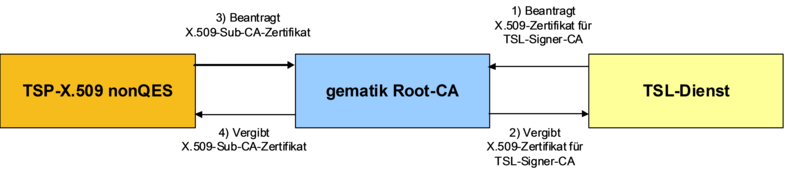
Abbildung 1: Abb_PKI_502 Nachbarsysteme der gematik-Root-CA
Die folgenden Nachbarsysteme sind für TSP-X.509 QES und TSP-X.509 nonQES zu berücksichtigen:
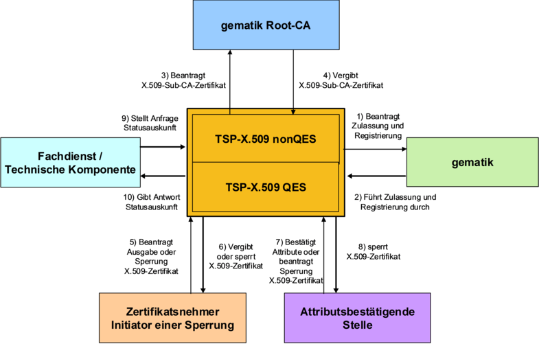
Abbildung 2: Abb_PKI_503 Nachbarsysteme TSP-X.509 QES und TSP-X.509 nonQES
Die Erstellung und Ausgabe von X.509-Zertifikaten für eGK, alternative Versichertenidentitäten, HBA, SMC-B und gSMC erfolgt im Auftrag der jeweils verantwortlichen Kartenherausgeber.
Die Produkttypen TSP-X.509 QES und TSP-X.509 nonQES können (logisch) in die Teilsysteme
untergliedert werden. Zur Umsetzung der Dienste sind gemäß [gemKPT_Arch_TIP#5.4] folgende Schnittsellen und Prozesse durch den TSP-X.509 QES und TSP-X.509 nonQES zu implementieren:
Die Prozessschnittstelle zur Veranlassung der Erzeugung eines X.509- Personen- oder Organisationszertifikates durch den berechtigten Akteur mit anschließender Bereitstellung des Zertifikats durch die CA.
Die Prozessschnittstelle zur Veranlassung der Sperrung eines X.509- Personen- oder Organisationszertifikates durch den berechtigten Akteur.
Die technische Schnittstelle zur Veranlassung der Erzeugung eines X.509-Komponenten-, Signer-, nonQES-HBA- oder Organisationszertifikates durch den berechtigten Akteur mit anschließender Bereitstellung des Zertifikats durch die Zentrale PKI.
Die technische Schnittstelle zur Veranlassung der Sperrung eines X.509-Komponenten- oder Signer-, nonQES-HBA- oder Organisationszertifikates durch den berechtigten Akteur bei der Zentralen PKI.
Die technische Schnittstelle zur Bereitstellung der Zertifikatsstatusinformation für Personen-, Organisations-, Komponenten- und Signerzertifikate.
Die folgenden Umsetzungen der Schnittstellen sind zu berücksichtigen.
Für Personen- und Organisationszertifikate müssen TSP-X.509 QES und TSP-X.509 nonQES die Schnittstellen P_Cert_Provisioning, P_Cert_Revocation und I_OCSP_Status_Information umsetzen.
Für Komponenten-, Signer-, nonQES-HBA- oder Organisationszertifikate muss der Anbieter der zentralen PKI (TSP-X.509 nonQES) die Schnittstellen I_Cert_Provisioning, I_Cert_Revocation und I_OCSP_Status_Information umsetzen.
Die folgende Abbildung Abb_PKI_504 zeigt eine Zuordnung der Schnittstellen zu den Teilsystemen des TSP-X.509.
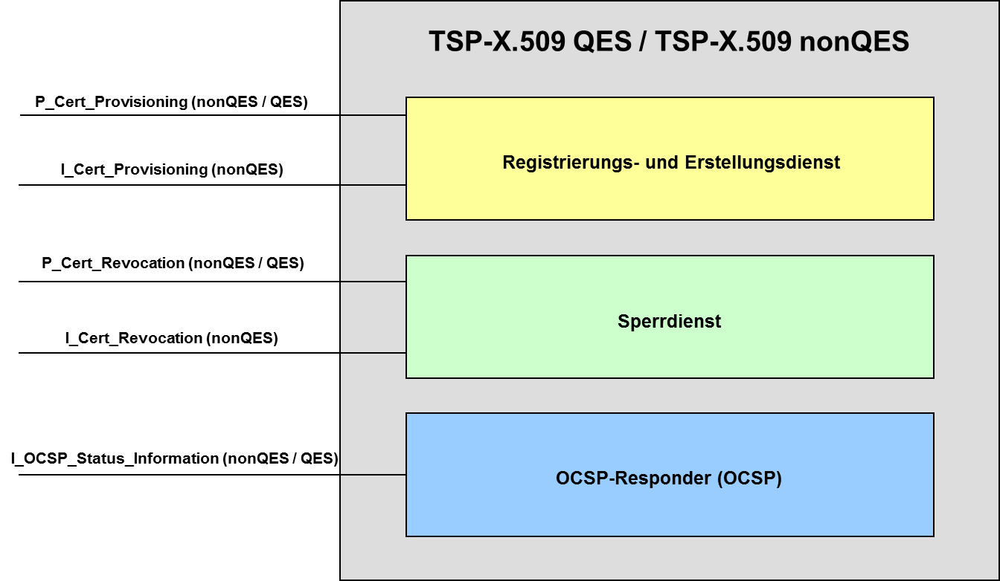
Abbildung 3: Abb_PKI_504 Schnittstellen TSP-X.509 QES und TSP-X.509 nonQES
Zur Umsetzung werden die Schnittstellen P_Cert_Provisioning und I_Cert_Provisioning internen Schnittstellen logisch zugeordnet, um den funktionalen Anteil der Registrierung von Antragstellern im Prozess des Erstellungsdienstes geeignet zu berücksichtigen. Hierzu werden die folgenden internen Schnittstellen verwendet:
Schnittstelle zur Registrierung von nonQES-X.509-Personen- und Organisationszertifikaten durch den berechtigten Akteur mit anschließender Bereitstellung des Zertifikats.
Schnittstelle zur Registrierung von QES-X.509-Zertifikaten durch den berechtigten Akteur mit anschließender Bereitstellung des Zertifikats.
Schnittstelle zur Erstellung von nonQES-Personen- und Organisationszertifikaten und QES-X.509-Zertifikate durch die X.509-CA.
Schnittstelle zur Registrierung der Zentralen PKI von X.509-Komponenten-, Signer-, nonQES-HBA- und Organisationszertifikate.
Schnittstelle zur Erstellung der Zentralen PKI von X.509-Komponenten-, Signer-, nonQES-HBA- und Organisationszertifikate.
Abbildung Abb_PKI_504 zeigt die Zuordnung der umzusetzenden Schnittstellen für die Registrierung und Erstellung von X.509-Zertifikaten gemäß [gemKPT_Arch_TIP] und den zugehörigen internen Schnittstellen.
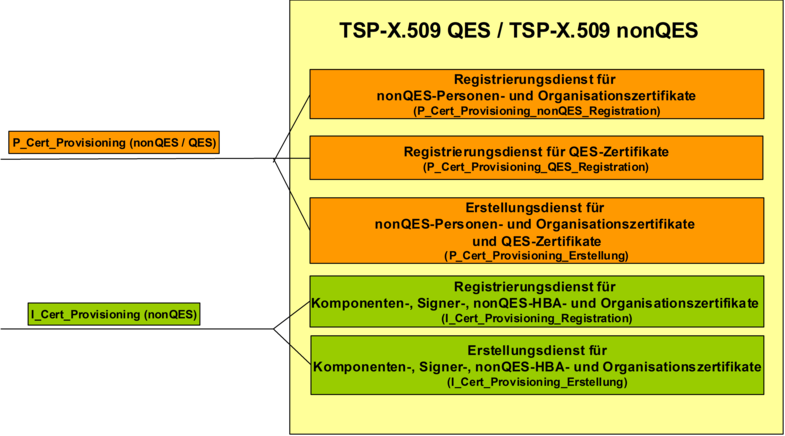
Abbildung 4: Abb_PKI_504 Schnittstellen Registrierungs- und Erstellungsdienst TSP-X.509 QES und TSP-X.509 nonQES
Die nachfolgende Abbildung Abb_PKI_506 integriert zusätzlich den berechtigten Antragsteller für Personen- und Organisationszertifikate bzw. an der Zentralen PKI für Komponenten-, Signer-, nonQES-HBA- und Organisationszertifikate. Weiterhin wird dargestellt, dass der funktionale Anteil der Registrierung vor der eigentlichen Erstellung des X.509-Zertifikates erfolgt. D.h. aus Sicht TSP-X.509 QES und TSP-X.509 nonQES die Schnittstellen P_Cert_Provisioning_Erstellung und I_Cert_Provisioning Erstellung rein interne Schnittstellen sind. Die Schnittstellen
sind Schnittstellen nach außen zum Antragsteller.
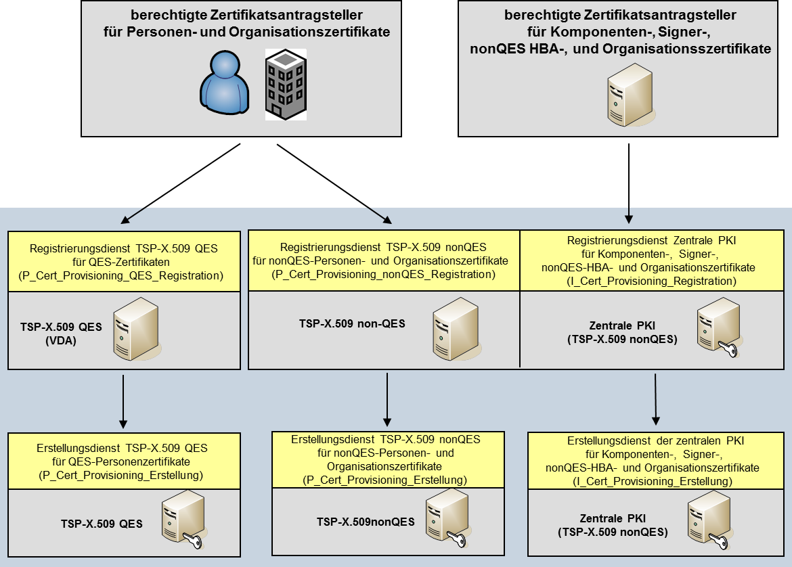
Abbildung 5: Abb_PKI_506 Organisatorische Anordnung der Schnittstelle Registrierungs- und Erstellungsdienst TSP-X.509 QES und TSP-X.509 nonQES
Für die Schnittstellen zur Veranlassung einer Sperrung (Teilsystem Sperrdienst) eines X.509-Zertifikates ist eine entsprechende Aufteilung nicht erforderlich. Es sind die folgenden Schnittstellen zu berücksichtigen.
Schnittstelle zur Veranlassung einer Sperrung von X.509-Personen- und Organisationszertifikaten durch den berechtigten Akteur.
Schnittstelle zur Veranlassung einer Sperrung bei der Zentralen PKI von X.509-Komponenten-, Signer-, nonQES-HBA- und Organisationszertifikaten durch den berechtigten Akteur.
Eine Zuordnung der Schnittstelle zu Personen- und Organisationszertifikaten bzw. der Schnittstelle der Zentralen PKI zu Komponenten-, Signer-, nonQES-HBA- und Organisationszertifikaten wird in der Abbildung Abb_PKI_507 dargestellt. Weiterhin ist angegeben, ob die Schnittstelle für den TSP-X.509 nonQES oder TSP-X.509 QES umzusetzen ist.
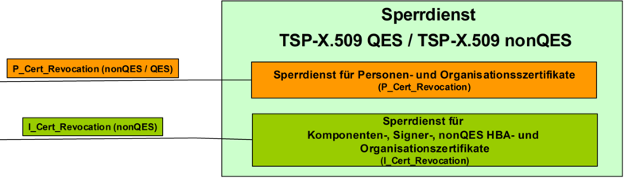
Abbildung 6: Abb_PKI_507 Schnittstellen Sperrdienst des TSP-X.509
Die nachfolgende Abbildung Abb_PKI_508 integriert zusätzlich den berechtigten Sperrantragsteller für Personen- und Organisationszertifikate bzw. an der Zentralen PKI für Komponenten- Signer-, nonQES-HBA- und Organisationszertifikate.
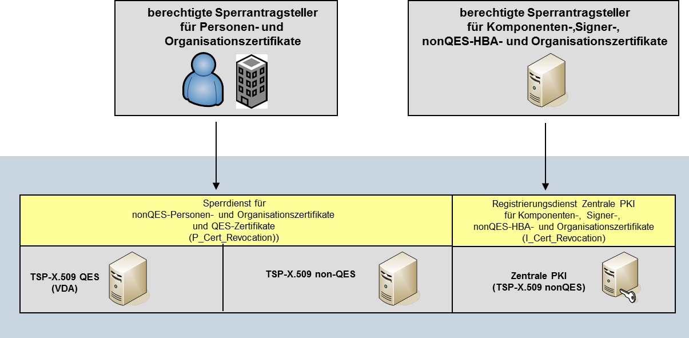
Abbildung 7: Abb_PKI_508 Organisatorische Anordnung Sperrdienst
Der Produkttyp gematik-Root-CA bietet die Schnittstelle P_Sub_CA_Certification_X.509 zur Ausstellung und Sperrung von X.509-Zertifikaten nachgeordneter TSP-X.509 nonQES an. Der Produkttyp übernimmt keine weiteren Funktionen.
Eine weitere Untergliederung der Aufbaustruktur des Produkttyps gematik-Root-CA ist nicht erforderlich.
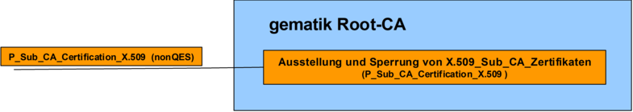
Abbildung 8: Abb_PKI_510 Schnittstellen Erstellung und Sperrung der gematik-Root-CA
Für die Schnittstelle I_OCSP_Status_Information zur Ausgabe von Statusauskünften (Teilsystem OCSP-Responder) ist eine Aufteilung ebenfalls nicht erforderlich. Sie ist durch den TSP-X.509 QES, TSP-X.509 nonQES und die gematik Root-CA umzusetzen.
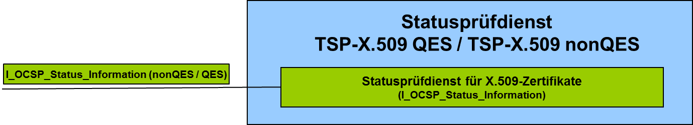
Abbildung 9: Abb_PKI_509 Schnittstellen OCSP-Responder TSP-X.509 QES und TSP-X.509 nonQES
Die Schnittstelle des OCSP-Responder ist nicht Bestandteil dieses Dokumentes sondern ist in [gemSpec_PKI#9.1] beschrieben.
Auf Grundlage übergreifender Festlegungen wurde zur Nutzung von PKI-Komponenten eine übergreifende gematik-Policy entwickelt [gemRL_TSL_SP_CP].
TIP1-A_3547
TSP-X.509 MÜSSEN für die Produktion von X.509-Zertifikaten eine Ausgabepolicy erstellen, die nicht im Widerspruch zu den übergeordneten Ausgabepolicies stehen darf und mindestens folgende Inhalte beschreibt: a)Festlegungen für Identifizierung, Registrierung, Ausgabe und Sperrung von Zertifikaten sowie Ausstellung von Folgezertifikaten b)Angaben zu organisatorischen (z.B. Rollen, Personal) und technischen Sicherheitsanforderungen (z.B. Schlüsselerzeugung, Backup c)Wirtschaftliche und Rechtliche Angelegenheiten sowie Angaben zur Haftung.
<=TIP1-A_5087
TSP-X.509 QES und TSP X.509 nonQES MÜSSEN die übergeordneten Herausgeberpolicies in ihrer Ausgabepolicy berücksichtigen und explizit umsetzen.
<=Alle Zertifikatsherausgeber stellen sicher, dass im Rahmen der Zertifikatserstellung für den Antragsteller nur genau die Zertifikate erstellt werden, für die der Antragsteller gemäß Ausgabepolicy berechtigt ist.
Ein TSP-X.509 muss für den Betrieb einer TSP-X.509 in einem Sicherheitskonzept den Gesamtprozess der X.509-(CA) und die Einhaltung der beschriebenen Maßnahmen auf Verlangen der TI-Plattform nachweisen [gemKPT_PKI_TIP#TIP1-A_2086]. Sind mehrere Organisationen an diesem Prozess beteiligt, sind die technischen- und organisatorischen Schnittstellen sowie deren Absicherung zu beschreiben – ggf. auch durch Referenzierung der Sicherheitskonzepte der beteiligten Organisationen.
TIP1-A_3877
In dem Sicherheitskonzept des TSP-X.509 MUSS der TSP-X.509 beschreiben, wie die Zusammenarbeit von Kartenherausgeber, Kartenhersteller sowie TSP-X.509 organisiert ist und wie die entsprechenden Sicherheitsmaßnahmen bei den einzelnen Organisationen greifen. Es sind alle im Verantwortungsbereich des TSP-X.509 befindlichen Schnittstellen zu beschreiben.
<=TIP1-A_3879
Die gematik Root-CA MUSS sicherstellen, dass ein X.509-Sub-CA-Zertifikat nur dann erzeugt wird, wenn der beantragende TSP.X.509 aktuell bei der gematik zugelassen ist.
<=TIP1-A_5088
TSP-X.509 QES und TSP-X.509 nonQES MÜSSEN sicherstellen, dass ein X.509-Zertifikat für einen HBA oder eine SMC-B in der Produktivumgebung nur dann erzeugt wird, wenn dieser eine Sektorzulassung von dem jeweiligen Kartenherausgeber erhalten hat.
(Für die Produktion von HBA und SMC-B für die Personalisierungsvalidierung kann von den zuständigen Kartenherausgebern eine Ausnahmegenehmigung erteilt werden.)
TIP1-A_3880
Der TSP-X.509 MUSS bei Widerruf der TSP-X.509-Zulassung durch die gematik den Widerruf sowie die korrekte Durchführung der Auflagen schriftlich gegenüber der gematik dokumentieren und die Umsetzung bestätigen.
<=TIP1-A_3894
Der TSP-X.509 nonQES MUSS Sub-CA-Zertifikate zur Erstellung von X.509-Zertifikaten von der gematikRoot-CA ableiten. <=
A_17814
Der TSP-X.509 nonQES eGK MUSS Sub-CA-Zertifikate zur Erstellung von X.509-Zertifikaten der alternativen Versichertenidentitäten von der gematikRoot-CA ableiten. <=
Es gelten folgende Datenschutzanforderungen an die gematik-Root-CA und den TSP-X.509 nonQES.
TIP1-A_4230
TSP-X.509 nonQES und gematik-Root-CA MÜSSEN die Antrags- und Sperrprozesse datenschutzgerecht ausgestalten, d.h. insbesondere sind für die Verarbeitung der Antrags- und Sperrauftragsdaten die Datenschutzgrundsätze gemäß Art. 5 DSGVO zu berücksichtigen sowie die technischen und organisatorischen Maßnahmen nach Art. 25 und Art. 32 DSGVO zu treffen.
<=
TIP1-A_4231
TSP-X.509 MÜSSEN die auf ihren Diensten gespeicherten Zertifikate beim TSP-X.509 nonQES unverzüglich löschen, sobald die gesetzlichen oder vertraglichen Aufbewahrungsfristen erreicht sind.
<=TIP1-A_4232
Der TSP-X.509 nonQES MUSS die Zertifikatsanträge, die Zertifikatstatusinformationen und die Sperraufträge zu einem X.509-Zertifikat unverzüglich löschen, sobald die gesetzlichen oder vertraglichen Aufbewahrungsfristen erreicht sind.
<=TIP1-A_4233
Die gematik-Root-CA MUSS die Zertifikats- und Sperraufträge zu einem ausgestellten X.509-Zertifikat unverzüglich löschen, sobald die gesetzlichen oder vertraglichen Aufbewahrungsfristen erreicht sind.
<=
TIP1-A_4234
Der TSP-X.509 nonQES und die gematik Root-CA DÜRFEN OCSP-Anfragen NICHT protokollieren.
<=
TIP1-A_4235
Falls es erforderlich sein sollte, dass TSP-X.509 nonQES und gematik-Root-CA eine Protokollierung zum Zwecke der Fehler- bzw. Störungsbehebung durchführen, MÜSSEN die Protokolldaten entsprechend des Datenschutzgrundsatzes der Datenminimierung gemäß Art. 5 Abs. 1 Satz 1 lit.c) DSGVO unter Berücksichtigung der Art. 25, 32 DSGVO derart gestaltet sein, dass nur personenbezogene Daten in der Art und dem Umfang enthalten sind, wie sie zur Behebung erforderlich sind.
<=
Bei den TSP-X.509 wird zwischen einem Produktiv-TSP-X.509 und einem Test-TSP-X.509 unterschieden.
Der Anbieter der gematik-Root-CA stellt sowohl eine produktive gematik-Root-CA als auch eine gematik Test-Root-CA zur Verfügung. Anbieter einer TSP-X.509 QES stellen sowohl eine produktive TSP-X.509 QES als auch eine Test-TSP-X.509 QES zur Verfügung. Anbieter einer TSP-X.509 nonQES stellen sowohl eine produktive TSP-X.509 nonQES als auch eine Test-TSP-X.509 nonQES zur Verfügung.
TIP1-A_4427
Jeder TSP-X.509 MUSS neben einer produktiven TSP-X.509-CA ebenfalls eine Test-TSP-X.509-CA betreiben.
<=TIP1-A_3660
TSP-X.509 MÜSSEN sicherstellen, dass das Testsystem von dem Produktivsystem technisch, organisatorisch und betrieblich so getrennt werden, dass keine gegenseitige Beeinflussung und keine Verwechslung möglich sind.
<=TIP1-A_4428
Der TSP-X.509 MUSS eine Test-TSP-X.509 bei der gematik registrieren.
<=TIP1-A_3630
Der TSP-X.509 nonQES MUSS einen Sperrdienst für nonQES-Zertifikate implementieren und die geforderten organisatorischen Schnittstellen für die Sperrung implementieren.
<=TIP1-A_3643
Der Anbieter der zentralen PKI (TSP-X.509 nonQES) MUSS einen Sperrdienst für Komponenten- und Signer-, nonQES-HBA- und Organisationszertifikate sowie die geforderten technischen und organisatorischen Schnittstellen für die Sperrung implementieren.
<=TIP1-A_5376
Der TSP-X.509 nonQES und der Anbieter der gematik Root-CA MÜSSEN mindestens in der Zeit von Mo.-So. 6-22 Uhr für die Annahme von Sperraufträgen der Sperrberechtigten erreichbar sein.
<=TIP1-A_3548
TSP-X.509 QES, TSP-X.509 nonQES und die gematik Root-CA MÜSSEN die folgenden kryptographischen Objekte als schützenswerte Objekte in ihrem Sicherheitskonzept berücksichtigen: (a) Private Schlüssel (Erstellungsdienst und OCSP-Responder), (b) Öffentlicher Schlüssel (Erstellungsdienst und OCSP-Responder), (c) Öffentlicher Schlüssel von Antragstellern, (d) Anträge zur Ausstellung von X.509-Zertifikaten, (e) Authentisierungsinformationen von Sperrberechtigten, (f) Dokumentation über beauftragte und durchgeführte Sperrungen, (g) Statusinformationen, (h) Zulassungsdokumente, (i) Registrierungsdokumente, (j) Authentisierungsinformationen zur Authentisierung von internen Akteuren bzw. Rollen, (k) Protokolldaten, (l) Konfigurationsdaten.
<=TIP1-A_3549
TSP-X.509 QES und TSP-X.509 nonQES MÜSSEN die Vorgaben der gematik hinsichtlich der Einstufung des Schutzbedarfs gemäß dem Ergebnis der Schutzbedarfsfeststellung der TI berücksichtigen.
<=TIP1-A_3550
Der TSP-X.509 KANN die durch die gematik festgelegte Einstufung des Schutzbedarfs spezifisch erhöhen.
<=TIP1-A_3881
Der TSP-X.509 DARF die durch die gematik festgelegte Einstufung des Schutzbedarfs NICHT verringern.
<=TIP1-A_3883
Die TSP-X.509 MÜSSEN sicherstellen, dass im Falle nicht-sicherheitskritischer Incidents der OCSP-Responder und Sperrdienst in der vereinbarten Dienstgüte für die bereits ausgegebenen nonQES-CA- und EE-Zertifikate bis zu ihrem regulären Ablauf in der TI bereitgestellt werden.
<=TIP1-A_3554
TSP-X.509 QES und TSP-X.509 nonQES MÜSSEN für den internen Datenaustausch einen Mechanismus zur Sicherung der Datenintegrität, der Authentizität und zur Vertraulichkeit der Daten zur Verfügung stellen.
<=TIP1-A_3555
TSP-X.509 nonQES und gematik Root-CA MÜSSEN für den Datenaustausch zwischen gematik und TSP-X.509 nonQES bzw. zwischen gematik und gematik Root-CA einen Mechanismus zur Sicherung der Datenintegrität, der Authentizität und zur Vertraulichkeit der Daten zur Verfügung stellen.
<=TIP1-A_3557
Die TSP-X.509 nonQES MÜSSEN für den Datenaustausch mit anderen Rollen und Diensten einen Mechanismus zur Sicherung der Datenintegrität, der Authentizität und zur Vertraulichkeit der Daten zur Verfügung stellen. Hierzu gehören die Schnittstellen von
a) TSP-X.509 nonQES für HBA, SMC-B und eGK zum berechtigten Zertifikatsantragsteller zur Beantragung und Ausstellung von X.509-Personen- und Organisationszertifikaten,
b) TSP-X.509 nonQES der Komponenten-PKI zum berechtigten Hersteller oder Anbieter zur Beantragung und Ausstellung von X.509-Komponentenzertifikaten,
c) TSP-X.509 nonQES der Komponenten-PKI zum berechtigten TSP-X.509 nonQES zur Beantragung und Ausstellung von OCSP- und CRL-Signerzertifikaten,
d) TSP-X.509 nonQES zum Sperrantragsteller für die Sperrung von X.509-Komponenten-, Signer-, nonQES-HBA-, nonQES-eGK- und Organisationszertifikaten.
Hierbei sind die Anforderungen zur Verwendung kryptographischer Algorithmen in der Telematikinfrastrukur zu berücksichtigen [gemSpec_Krypt].
A_17234
Ein TSP-X.509 nonQES SMC-B MUSS, wenn er mit dem Betreiber einer KTR-AdV einen sicheren Prozess zur Personalisierung von HSMs definiert und etabliert, alle in [gemSpec_KTR-AdV#TAB_ADV_385] genannten Aspekte berücksichtigen. <=
A_17643
Ein TSP-X.509 nonQES SMC-B MUSS, wenn er mit dem Betreiber eines Basis- oder KTR-Consumer einen sicheren Prozess zur Personalisierung von HSMs definiert und etabliert, alle in [gemSpec_Basis_KTR_Consumer#Tab_Personalisierung_HSM] genannten Aspekte berücksichtigen.
<=
Falls für einen Prozess zur HSM-Personalisierung nur eine geringe Anzahl an Instanzen erwartet wird, kann es sinnvoll sein, Teile dieses Prozesses rein organisatorisch umzusetzen. Anstelle einer technischen Schnittstelle kann dann ein papierbasiertes Verfahren eingesetzt werden.
TIP1-A_5371
Der Anbieter der gematik Root-CA MUSS sicherstellen, dass die gematik Root-CA hinsichtlich der Signaturidentitäten vollständig getrennt von anderen Systemen und deren Signaturidentitäten aufgebaut und betrieben wird.
<=TIP1-A_3558
Der TSP-X.509 nonQES MUSS zur Ausstellung von Personen- und Organisationszertifikaten die Schnittstellen P_Cert_Provisioning, P_Cert_Revocation und I_OCSP_Status_Information umsetzen.
<=TIP1-A_3559
Der Anbieter der Zentralen PKI (TSP-X.509 nonQES) MUSS zur Ausstellung von Komponenten-, Signer-, nonQES-HBA- und Organisationszertifikaten die Schnittstellen I_Cert_Provisioning, I_Cert_Revocation und I_OCSP_Status_Information umsetzen.
<=TIP1-A_3560
Der TSP-X.509 QES MUSS die Schnittstellen P_Cert_Provisioning, P_Cert_Revocation und I_OCSP_Status_Information umsetzen.
<=TIP1-A_3562
Der Anbieter der gematik-Root-CA MUSS die Schnittstelle P_Sub_CA_Certification_X.509 zur Ausstellung von X.509-Zertifikaten für nachgeordnete CAs umsetzen.
<=A_17613
Der TSP-X.509 nonQES eGK MUSS für die Zertifikate der alternativen Versichertenidentitäten die Schnittstellen
A_17614
Ein TSP-X.509 nonQES eGK MUSS die Zertifikate der alternativen Versichertenidentitäten C.CH.AUT_ALT über eine dedizierte CA ausstellen (s. gemSpec_PKI#5.12.2). <=
TSP-X.509 QES und TSP-X.509 nonQES muss sicherstellen, dass nur für berechtigte Antragsteller Personen- und Organisationszertifikate erstellt werden.
Der Registrierungsdienst registriert, identifiziert und authentisiert den berechtigten Zertifikatsantragsteller, empfängt dazu die Antragsdaten und sendet die für die Zertifikatserstellung erforderlichen Daten an den Erstellungsdienst. Nach Erstellung der beantragten X.509-Zertifikate durch den Erstellungsdienst, liefert der Registrierungsdienst die Zertifikate an den Kartenherausgeber aus.
Die Beantragung zur Zertifikatserstellung wird von Antragsberechtigten durchgeführt und von den Berechtigungsprüfenden Stellen bestätigt.
Der Erstellungsdienst des TSP-X.509 erstellt mit seiner X.509-CA die Personen- und Organisationszertifikate und liefert die X.509-Zertifikate an den Registrierungsdienst zur Übermittlung an den Zertifikatsantragsteller zurück.
Für die Prüfung der Antragsberechtigung muss eine Berechtigungsprüfende Stelle übergreifend festlegen, wer welche Zertifikate (Komponenten, Versicherte, etc.) beantragen darf und Berufsgruppenattribute bestätigen darf.
Zur Erstellung der Personen- und Organisationszertifikate werden die in Tab_PKI_501 zusammengefassten Rollen zur Berechtigungsprüfung definiert.
Tabelle 1: Tab_PKI_501 Allgemeine Übersicht der Rollen und deren Aufgaben beim Registrierungsdienst
| Rolle |
Aufgabe/Funktion |
|---|---|
| TSP-X.509 QES, TSP-X.509 nonQES |
nimmt Anfragen entgegen und liefert Zertifikate nach Erstellung aus |
| Antragsberechtigter |
beantragt Zertifikat und setzt dieses nach Auslieferung ein |
| Berechtigungsprüfende Stelle |
verwaltet wer die Berechtigung besitzt, einen bestimmten Zertifikatstyp zu beantragen und teilt diese Berechtigungen dem TSP-X.509 mit |
Gemäß Tab_PKI_502 gelten folgende Zuständigkeiten für die berechtigte Antragstellung von nonQES-Zertifikaten für Leistungserbringer, LEO- bzw. KTR-Organisationen und Versicherte.
Tabelle 2: Tab_PKI_502 Berechtigte Zertifikatsantragsteller für non-QES Leistungserbringer-, LEO bzw. KTR-Organisation und Versichertenzertifikate sowie Prüfkartenzertifikate
| Zertifikatstyp |
Berechtigte Zertifikatsantragsteller |
Berechtigungsprüfende Stelle |
Zertifikatsnehmer |
|---|---|---|---|
| C.HP.AUT C.HP.ENC |
Leistungserbringer |
herausgebende LEO |
Leistungserbringer |
| C.HCI.AUT C.HCI.ENC C.HCI.OSIG |
Leistungserbringer der med. Institution |
herausgebende LEO |
med. Institution |
| Zeichnungsberechtigter Mitarbeiter d. zertifi-katsnehmenden Ge- sellschafterorganisation |
Herausgebende Organisation (z.B. Spitzenverband d. zertifikatsnehmenden Gesellschafterorganisa- tion) |
Gesellschafterorganisation |
|
| KTR-Organisation |
KTR-Organisation |
Kostenträger-Geschäftsstelle |
|
| C.CH.AUT C.CH.ENC C.CH.AUTN C.CH.ENCV C.CH.AUT_ALT |
herausgebender Kos- tenträger |
herausgebender Kos- tenträger |
Versicherter |
| C.CH.AUT C.CH.ENC C.CH.AUTN C.CH.ENCV |
gematik als Herausgeber der Prüfkarte eGK |
gematik |
gematik Prüfidentität für Prüfkarte eGK |
Gemäß Tab_PKI_503 gelten folgende Zuständigkeiten für die berechtigte Antragstellung von QES-Zertifikate für Leistungserbringer.
Tabelle 3: Tab_PKI_503 Berechtigte Zertifikatsantragsteller für QES Leistungserbringerzertifikate
| Zertifikatstyp |
Berechtigte Zertifikatsantragsteller |
Berechtigungsprüfende Stelle |
Zertifikatsnehmer |
|---|---|---|---|
| C.HP.QES |
Leistungserbringer selbst |
herausgebende LEO |
Leistungserbringer |
Die Abbildung Abb_PKI_511 stellt die Zuständigkeiten der Rollen bei der Antragsstellung der Personen- und Organisationszertifikate dar.
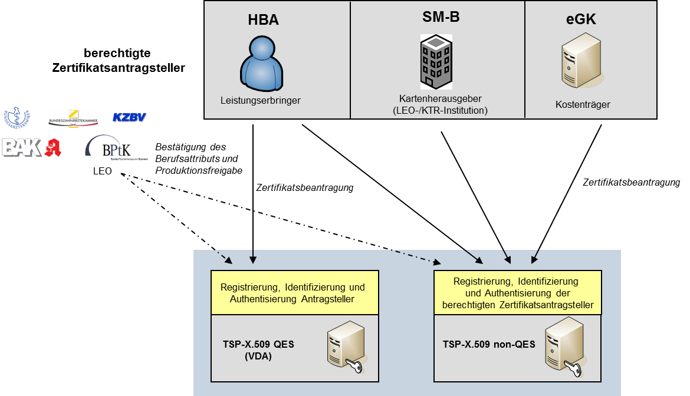
Abbildung 10: Abb_PKI_511 Zuständigkeiten der Rollen bei Zertifikatsantragstellung der Personen- und Organisationszertifikate
Hinweis: Die in der Abbildung aufgeführten Symbole für die Bundesorganisationen der Leistungserbringerorganisationen (LEO) stehen hier und in weiteren Abbildungen stellvertretend für die zuständigen Organisationen.
Bei der Ausstellung von Zertifikaten wird zwischen folgenden Schnittstellen unterschieden:
TIP1-A_3564
Der TSP-X.509 nonQES MUSS die technischen und organisatorischen Voraussetzungen schaffen, um die Anforderungen an den Registrierungsdienst für nonQES-Zertifikate für Leistungserbringer, LEO und KTR-Institutionen sowie Versicherte zu erfüllen.
<=Gemäß [gemRL_TSL_SP_CP#4.2.3] muss der TSP-X.509 nonQES einen Zertifikatsantragssteller identifizieren und eine vollständige Prüfung der Antragsdaten gewährleisten.
TIP1-A_3565
Der TSP-X.509 nonQES MUSS in seiner CP (bzw. CPS) festlegen, a) welche Stellen für die Zertifikatsbeantragung von nonQES-Personen- und Organisationszertifikate berechtigt sind und b) wie die Registrierung zur eindeutigen Identifikation und Authentisierung der berechtigten Zertifikatsantragsteller durchzuführen ist.
<=
TIP1-A_3567
Der TSP-X.509 nonQES MUSS das Antragsverfahren mit den Kartenherausgebern für HBAs, eGKs, und SMC-Bs abstimmen und bereitstellen.
<=TIP1-A_3569
Der TSP-X.509 nonQES MUSS bei Eingang eines Zertifikatsantrags zur Erstellung von Personen- und Organisationszertifikaten sicherstellen, dass der Zertifikatsantrag an den Erstellungsdienst des TSP-X.509 nonQES nur weitergeleitet wird, wenn a) der berechtigte Zertifikatsantragssteller erfolgreich identifiziert und authentisiert wurde, b) der Antrag vollständig war und erfolgreich geprüft werden konnte, c) die Berechtigungsprüfende Stelle die Berechtigung der Antragsstellung und das Berufsgruppenattribut bestätigt, d) alle für die Erstellung des beauftragten X.509-Zertifikats obligatorischen Zertifikatsdaten übermittelt wurden.
<=TIP1-A_5089
Ist die Überprüfung des Zertifikatsantrags negativ verlaufen, MUSS der TSP-X.509 nonQES sicherstellen, dass keine Zertifikatsanträge an Bestätigungsprüfende Stellen zur Bestätigung des Berufsgruppenattributs und Produktionsfreigabe weitergeleitete werden.
<=TIP1-A_5086
Der TSP-X.509 nonQES MUSS sicherstellen, dass die folgenden Daten für die Erstellung von X.509-Zertifikaten für Leistungserbringer von der Bestätigungsprüfende Stellen zur Bestätigung des Berufsgruppenattributs und Produktionsfreigabe vorliegen.
TIP1-A_3570
Die TSP-X.509 nonQES MUSS sicherstellen, dass mindestens die in den Zertifikatsprofilen der HBA-Kartenherausgeber als Pflichtfelder festgelegten spezifischen Daten des Zertifikatsnehmers für die Erstellung von X.509-Zertifikaten für Leistungserbringer zu jedem Zertifikatsantrag vorliegen.
<=TIP1-A_3571
Der TSP-X.509 nonQES MUSS für Leistungserbringer die Berufsbezeichnung für das Feld professionItem sowie die vorgegebene OID zu der angegeben Berufsbezeichnung für das Attribut Admission des X.509-Personen- und Organisationszertifikates als professionOID gemäß [gemSpec_OID#Tab_PKI_402] zu den Zertifikatserstellungsdaten hinzufügen.
<=Die Object Identifier sind im Dokument [gemSpec_OID] angegeben.
TIP1-A_3572
Die TSP-X.509 nonQES MUSS sicherstellen, dass mindestens die in [gemSpec_PKI#Tab_PKI_238], [gemSpec_PKI#Tab_PKI_239] und [gemSpec_PKI#Tab_PKI_240] mit der Kardinalität 1 festgelegten spezifischen Daten des Zertifikatsnehmers für die Erstellung von X.509-Organistationszertifikate für LEO- und KTR-Institutionen zu jedem Zertifikatsantrag vorliegen.
<=TIP1-A_3573
Der TSP-X.509 nonQES MUSS für Leistungserbringer- und Kostenträger-Organisationen für die Erweiterung Admission im Feld professionItem die Beschreibung der Institution sowie im Feld professionOID die OID der Institution gemäß [gemSpec_OID#Tab_PKI_403] zu den Zertifikatserstellungsdaten hinzufügen.
<=Die Object Identifier sind im Dokument [gemSpec_OID] angegeben.
TIP1-A_3574
Der TSP-X.509 nonQES MUSS sicherstellen, dass mindestens die in [gemSpec_PKI#Tab_PKI_232] und [gemSpec_PKI#Tab_PKI_233] mit der Kardinalität 1 festgelegten spezifischen Daten des Zertifikatsnehmers für die Erstellung von X.509-Personenzertifikaten für Versicherte zu jedem Zertifikatsantrag vorliegen.
<=TIP1-A_3575
Der TSP-X.509 nonQES MUSS sicherstellen, dass mindestens die in [gemSpec_PKI#Tab_PKI_235] und [gemSpec_PKI#Tab_PKI_236] mit der Kardinalität 1 festgelegten spezifischen Daten des Zertifikatsnehmers für die Erstellung der X.509-Zertifikate vom Typ AUTN und ENCV für Versicherte zu jedem Zertifikatsantrag vorliegen.
<=TIP1-A_3576
Der TSP-X.509 nonQES MUSS für alle Versichertenzertifikate die zu „oid_versicherter“ zugeordnete Beschreibung in das Feld professionItem sowie die zugehörige OID in das Feld professionOID gemäß [gemSpecOID#Tab_PKI_402] für das Attribut Admission des X.509-Zertifikates zu den Zertifikatsdaten hinzufügen.
<=TIP1-A_3577
Der TSP-X.509 nonQES MUSS die in den Zertifikatsprofilen [gemSpec_PKI#5] als optional gekennzeichneten Daten an den Erstellungsdienst des TSP-X.509 nonQES übermitteln, wenn diese vom berechtigten Zertifikatsantragssteller für Personen- und Organisationszertifikate im Rahmen des Antragsverfahrens übermittelt werden.
<=TIP1-A_3580
Der Registrierungsdienst des TSP-X.509 nonQES MUSS für die Erstellung der X.509-Personen- und Organisationszertifikate mindestens alle notwendigen Zertifikatsdaten an den Erstellungsdienst weiterleiten.
<=TIP1-A_3581
Der Registrierungsdienst des TSP-X.509 nonQES MUSS pro Zertifikatsantrag mindestens das erstellte X.509-Personen- und Organisationszertifikat als Ausgabedatum sowie weitere Daten, die eine eindeutigen Bezug zur Bestellung ermöglichen, bereitstellen.
<=TIP1-A_5090
TSP-X.509 nonQES MUSS der Bestätigenden Stelle des Berufgruppenattributes über die Ausstellung des Zertifikats informieren und die folgenden Daten zurückliefern:
TIP1-A_3884
Der TSP-X.509 nonQES MUSS sicherstellen, dass ab dem Zeitpunkt der Feststellung eines nicht-sicherheitskritischen Incidents, bis zum Entscheid des Incident-Managements über das weitere Vorgehen, keine Zertifikatsanträge für X.509-Personen- und Organisationszertifikate der betroffenen CA entgegengenommen oder an den Erstellungsdienst des TSP-X.509 nonQES weitergeleitet wird.
<=TIP1-A_3582
Der TSP-X.509 nonQES MUSS in seinem Registrierungsdienst für X.509-Personen- und Organisationszertifikate die folgenden Schritte durchführen:
Der TSP-X.509 nonQES MUSS dem berechtigten Zertifikatsantragsteller eine Schnittstelle zur Beantragung, Identifizierung und Ausgabe eines X.509-Personen- und Organisationszertifikats bereitstellen
Der TSP-X.509 nonQES MUSS eine Schnittstelle zur Bestätigenden Stelle einrichten, um die Berechtigung des Antragstellers sowie die Berufsgruppenattributbestätigung zu erhalten.
Der TSP-X.509 nonQES MUSS nach dem Eingang des Antrags diesen auf Vollständigkeit prüfen und den Zertifikatsantragssteller registrieren, identifizieren und authentisieren.
Der TSP-X.509 nonQES, MUSS den Zertifikats-Request an den Erstellungsdienst weiterleiten, wenn dieser den Zertifikatsantragsteller eindeutig identifiziert und die Prüfung des Antrags, dass dieser berechtigt ist X.509-Zertifikate zu beantragen, zu einem positiven Ergebnis geführt hat. Konnte der Zertifikatsantragsteller nicht identifiziert werden oder hat die Prüfung des Antrags zu einem negativem Ergebnis geführt, wird der Zertifikatsantrag abgelehnt.
Der Registrierungsdienst des TSP-X.509 nonQES erhält vom Erstellungsdienst des TSP-X.509 das erstellte Personen- und Organisationszertifikat zurück.
Der Registrierungsdienst des TSP-X.509 nonQES MUSS das Zertifikat an den berechtigten Zertifikatsantragssteller ausliefern.
Der Registrierungsdienst des TSP-X.509 nonQES MUSS der Bestätigen Stelle des Berufgruppenattributes das Zertifikat und zertifikatsrelevante Informationen zurückliefern.
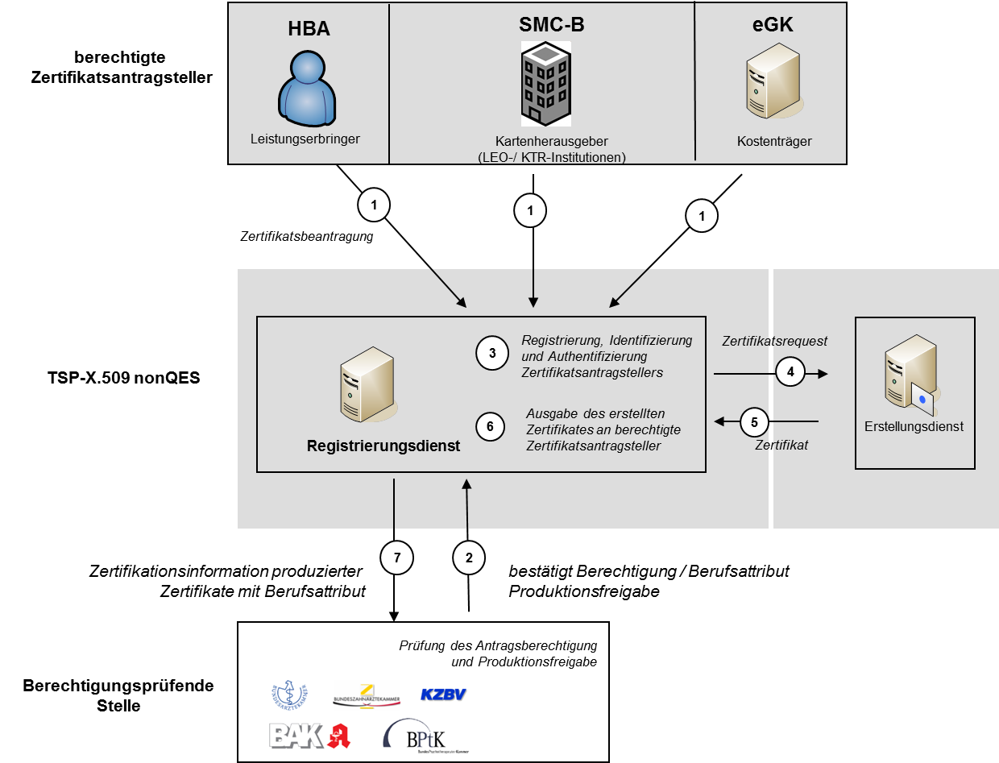
Abbildung 11: Abb_PKI_512 Prozessablauf Registrierungsdienst nonQES-Personen- und Organisationszertifikate
Dieser Abschnitt enthält spezifische Ausprägungen des Registrierungsprozess der Leistungserbringer zur Bereitstellung von qualifizierten X.509-Zertifikaten durch TSP-X.509 QES.
TIP1-A_3584
Der TSP-X.509 QES MUSS seine Antrags- und Ausgabeprozesse sowie Registrierungs-, Erstellungs- und Statusprüfdienst OCSP-Responder für QES-Zertifikate gemäß den Vorgaben aus [eIDAS] durchführen.
<=TIP1-A_5092
Ist die Überprüfung des Zertifikatsantrags negativ verlaufen, MUSS der TSP-X.509 QES sicherstellen, dass keine Zertifikatsanträge an Bestätigungsprüfende Stellen zur Bestätigung des Berufsgruppenattributs und Produktionsfreigabe weitergeleitete werden.
<=TIP1-A_5093
Der TSP-X.509 QES MUSS sicherstellen, dass die folgenden Daten für die Erstellung von X.509-Zertifikaten für Leistungserbringer von der Bestätigungsprüfende Stellen zur Bestätigung des Berufsgruppenattributs und Produktionsfreigabe vorliegen.
TIP1-A_3585
Die Registrierungsstelle des TSP-X.509 QES MUSS sicherstellen, dass mindestens die in gemSpec_PKI#Tab_PKI_270_1 mit der Kardinalität 1 festgelegten spezifischen Daten des Zertifikatsnehmers für die Erstellung von X.509-Zertifikaten für Leistungserbringer zu jedem Zertifikatsantrag vorliegen.
<=
TIP1-A_3586
Der TSP-X.509 QES MUSS für den Leistungserbringer die Berufsbezeichnung in das Feld professionItem sowie die vorgegebene OID zu der angegeben Berufsbezeichnung in das Attribut Admission des X.509-QES-Zertifikates als professionOID gemäß [gemSpec_OID#Tab_PKI_402] zu den Zertifikatserstellungsdaten hinzufügen.
<=Die Object Identifier sind im Dokument [gemSpec_OID] angegeben.
TIP1-A_3588
Der TSP-X.509 QES MUSS mit dem Kartenherausgeber die Antragsverfahren festlegen und in seiner CP (bzw. CPS) beschreiben, wenn der TSP-X.509 QES im Rahmen der Zertifikatserstellung für einen HBA mit der Erstellung von QES-Zertifikaten beauftragt wird.
<=TIP1-A_5094
TSP-X.509 QES MUSS die Bestätigende Stelle des Berufgruppenattributes über die Ausstellung des Zertifikats informieren und dazu die folgenden Daten zurückliefern:
TIP1-A_3885
Der TSP-X.509 QES MUSS sicherstellen, dass ab dem Zeitpunkt der Feststellung nicht-sicherheitskritischen Incidents, bis zum Entscheid des Incident-Managements über das weitere Vorgehen, keine Zertifikatsanträge für QES-X.509-Zertifikate der betroffenen CA entgegengenommen oder an den Erstellungsdienst des TSP-X.509 QES weitergegeben werden.
<=TIP1-A_3589
Der TSP-X.509 QES MUSS in seinem Registrierungsdienst für QES-Zertifikate die folgenden Schritte durchführen:
In Abbildung Abb_PKI_513 ist der Prozessablauf des Registrierungsdienstes des TSP-X.509 QES für QES-Zertifikate von Leistungserbringern und dessen Schnittstellen im Überblick dargestellt.
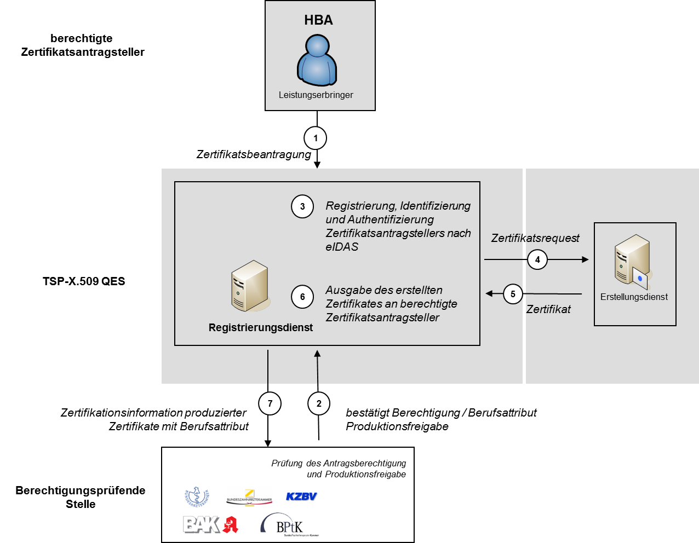
Abbildung 12: Abb_PKI_513 Prozessablauf Registrierungsdienst QES-Zertifikate
TSP-X.509 QES und TSP-X.509 nonQES stellen einen Erstellungsdienst für X.509-Personen- und Organisationszertifikate bereit.
TIP1-A_3590
TSP-X.509 QES und TSP-X.509 nonQES MÜSSEN sicherstellen, dass der öffentliche Schlüssel, dem die Attribute des Zertifikatsnehmers in einem X.509-Personen- und Organisationszertifikat zugeordnet werden, und der private Schlüssel des Zertifikatsnehmers zusammengehören.
<=TIP1-A_3591
TSP-X.509 QES und TSP-X.509 nonQES MÜSSEN sicherstellen, dass der SubjectDN eines X.509-Personen- und Organisationszertifikates den Zertifikatsinhaber TI-weit eindeutig bezeichnet. Dies erfolgt durch die geeignete Wahl der Attributsinhalte und gilt unabhängig davon, ob die Attribute optional oder obligatorisch sind.
<=Für die Erzeugung des X.509-Personen- und Organisationszertifikats sind die Festlegungen gemäß [gemSpec_PKI] hinsichtlich der Zertifikatsprofile sowie der Kodierung von Identitäten zu berücksichtigen.
TIP1-A_3886
Die TSP-X.509 QES und TSP-X.509 nonQES MÜSSEN im Feld AIA der ausgegebenen X.509-Zertifikate den URL des zugeordneten OCSP-Responders eintragen.
<=TIP1-A_3592
TSP-X.509 QES und TSP-X.509 nonQES MÜSSEN mit Hilfe der X.509-CA zur Erzeugung von X.509-Personen- und Organisationszertifikaten das X.509-Zertifikat erstellen und das erstellte X.509-Zertifikat an den Registrierungsdienst TSP-X.509 QES bzw. TSP-X.509 nonQES zurückliefern.
<=TIP1-A_3583
Der TSP-X.509 QES MUSS die Erstellung von QES-X.509-Zertifikaten gemäß den Vorgaben von [eIDAS] durchführen.
<=TIP1-A_3887
TSP-X.509 QES und TSP-X.509 nonQES MÜSSEN sicherstellen, dass ab dem Zeitpunkt der Feststellung eines nicht-sicherheitskritischen Incidents, bis zur Klärung des Sachverhaltes über das weitere Vorgehen im Rahmen des Incident Managements, keine Zertifikatsanträge für Personen- und Organisationszertifikate der betroffenen CA von dem Registrierungsdienst des TSP-X.509 QES und TSP-X.509 nonQES entgegennehmen oder bereits entgegengenommene verarbeiten werden.
<=TIP1-A_3888
TSP-X.509 QES und TSP-X.509 nonQES MÜSSEN die Statusinformation für die erstellten Personen- und Organisationszertifikat dem OCSP-Responder in der TI und im Internet zur Verfügung stellen.
<=
Für die QES-Zertifikatsprüfung in der TI benötigen zertifikatsprüfende Komponenten die jeweiligen OCSP-Responder-Adressen in der TI. Diese werden der TSL entnommen (vgl. gemSpec_TSL#TIP1-A_7219 und gemSpec_PKI#TUC_PKI_030) und müssen durch die TSP-X.509 QES zur Verfügung gestellt werden.
A_18040
Der TSP-X.509 QES MUSS alle in den End-Entity-Zertifikaten im AuthorityInfoAccess-Feld (AIA) eingetragenen OCSP-Responder-Adressen im Internet (vgl. gemSpec_PKI#Tab_PKI_270) sowie die zugehörigen Adressen der zuständigen OCSP-Responder in der TI der gematik mitteilen, damit diese Informationen für QES-Zertifikatsprüfungen gem. gemSpec_PKI#TUC_PKI_030 in die TSL aufgenommen werden können. <=
A_20255
Der Anbieter HBA MUSS Änderungen oder Ergänzungen bezüglich der Eintragungen von OCSP-Responder-Adressen im AuthorityInfoAccess-Feld (AIA) für QES-Zertifikate der HBA-Karten der gematik (PKI-Registrierung) umgehend mitteilen. Dabei MUSS auch die TI-interne OCSP-Responder-Adresse mitgeteilt werden, die für die TI-interne Beantwortung der OCSP-Anfragen für QES-Zertifikate zuständig ist.
Ein Prozess dazu MUSS im Betriebshandbuch des Anbieters HBA vorhanden und beschrieben sein. <=
TIP1-A_3594
TSP-X.509 QES und TSP-X.509 nonQES MÜSSEN die Zertifikatsstatusinformation für die erstellten Personen- und Organisationszertifikate dem OCSP-Responder in der TI und im Internet gemäß den in Tabelle Tab_PKI_509 definierten Bereitstellungszeitpunkten zur Verfügung stellen.
<=
Tabelle 4: Tab_PKI_509 Bereitstellungszeitpunkt der Zertifikatsstatusinformation durch den Erstellungsdienst
| Zertifikatstyp |
Bereitstellungszeitpunkt der Zertifikatsstatusinformation |
|---|---|
| C.HP.AUT C.HP.ENC |
Nach Bestätigung des Zertifikatsnehmers über den gesicherten Besitz des privaten Schlüssels |
| C.HP.QES C.CH.QES |
Nach Bestätigung des Zertifikatsnehmers über den gesicherten Besitz des privaten Schlüssels |
| C.HCI.AUT C.HCI.ENC C.HCI.OSIG |
Nach Bestätigung des Zertifikatsnehmers über den gesicherten Besitz des privaten Schlüssels |
| C.CH.AUT C.CH.ENC C.CH.AUTN C.CH.ENCV C.CH.AUT_ALT |
Unmittelbar nach Erstellung des X.509-Zertifikates |
TIP1-A_3595
TSP-X.509 QES und TSP-X.509 nonQES MÜSSEN weitere Anforderungen und Konkretisierungen an den Erstellungsdienst für Personen- und Organisationszertifikate durch die jeweiligen LEO- und KTR-Organisationen in ihren Prozessen berücksichtigen.
<=TIP1-A_3596
TSP-X.509 QES und TSP-X.509 nonQES MÜSSEN in Ihrem Erstellungsdienst für Personen- und Organisationszertifikate die folgenden Schritte durchführen:
In der Abbildung Abb_PKI_514 ist der Prozessablauf des Erstellungsdienstes TSP-X.509 QES und TSP-X.509 nonQES sowie dessen Schnittstellen im Überblick dargestellt.
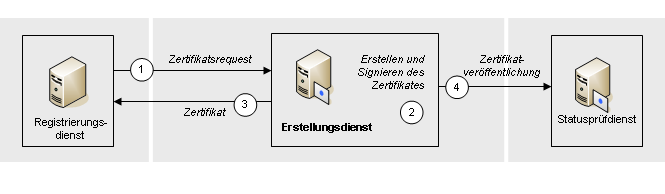
Abbildung 13: Abb_PKI_514 Prozessablauf Erstellungsdienstes des TSP-X.509-CA
Der TSP-X.509 nonQES eGK stellt die Schnittstelle I_Cert_Provisioning für die AUT_ALT-Zertifikate zur Verfügung.
Für die Zertifikate C.CH.AUT_ALT der alternativen Versichertenidentitäten gelten bzgl. der Ausstellung die gleichen Vorgaben wie für die analogen Zertifikate auf der eGK (s. Kap. 6.1). Die abweichenden Regelungen sind in den nachfolgenden Unterabschnitten angegeben.
A_17615
Ein TSP-X.509 nonQES eGK MUSS einen vollständig automatisierten Ablauf der Operationen an der Schnittstelle I_Cert_Provisioning ermöglichen. <=
Die Regeln zur Aufnahme in das Interoperabilitätsverzeichnis vesta sind in der Geschäfts- und Verfahrensordnung [GVO_IOPVZ] beschrieben.
A_17617
Der TSP-X.509 nonQES eGK MUSS für die Schnittstelle I_Cert_Provisioning der C.CH.AUT_ALT-Zertifikate sicherstellen, dass nur dann eine Berechtigung erteilt wird, wenn
der Nutzer ein durch die gematik zugelassener Signaturdienst ist (der Hinweis zu TIP1-A_3603 gilt hier sinngemäß) und
vom zuständigen eGK Kartenherausgeber als Berechtigter benannt wurde.
<=
A_17618
Ein TSP-X.509 nonQES eGK MUSS die Operation I_Cert_Provisioning:provide_Certificate zur Verfügung stellen, über die ein berechtiger Signaturdienst C.CH.AUT_ALT-Zertifikate integritätsgeschützt und vertraulich abrufen kann. <=
A_17619
Ein TSP-X.509 nonQES eGK MUSS sicherstellen, dass die Operation I_Cert_Provisioning:provide_Certificate nur mit Erfolg durchgeführt und das Zertifikat zurückgegeben wird, wenn
Die gematik hat die Verantwortung für die Ausgabe von Komponentenzertifikaten und beauftragt einen Anbieter als TSP-X.509 nonQES mit der Wahrnehmung und operativen Durchführung des Betriebs der zentralen PKI für die Erstellung und Ausgabe von
Berechtigt für die Antragsstellung eines X.509-Komponentenzertifikates sind Hersteller der durch die gematik zugelassenen Produkte.
Die Zulassungsinformationen der gematik (Berechtigungsinformation) enthalten die relevanten Informationen über zugelassene TSPs und zugelassene Produkte von Herstellern und Anbietern. Diese Zulassungsinformationen sind die Entscheidungsgrundlage, ob ein Hersteller oder Anbieter antragsberechtigt ist und ein Komponenten-, Signer-, nonQES-HBA- oder Organisationszertifikat für das von ihm beantragte Produkt generiert wird.
Gemäß Tabelle Tab_PKI_510 gelten folgende Zuständigkeiten:
Tabelle 5: Tab_PKI_510 Zuständigkeiten Rollen beim Registrierungsdienst der zentralen PKI für Komponenten-, Signer-, nonQES-HBA- und Organisationszertifikate
| Rolle |
Aufgabe/Funktion |
|---|---|
| Anbieter der zentralen PKI (TSP-X.509 nonQES) |
Durch gematik beauftragter TSP-X.509 nonQES |
| Antragsberechtigter Komponentenzertifikate |
Hersteller und Anbieter eines durch die gematik zugelassenen Produktes |
| Antragsberechtigter Signerzertifikate |
durch die gematik zugelassene TSP-X.509 nonQES |
| Antragsberechtigter nonQES-HBA-Zertifikate |
Kartenherausgeber oder vom Kartenherausgeber beauftragter Dienstleister |
| Antragsberechtigter Organisationszertifikate |
Kartenherausgeber oder vom Kartenherausgeber beauftragter Dienstleister |
| Berechtigungsprüfende Stelle |
berechtigungsprüfende Stelle ist die gematik |
Gemäß Tabelle Tab_PKI_511-01 gelten folgende Zuständigkeiten für die berechtigte Antragstellung der X.509-Zertifikatstypen:
Tabelle 6: Tab_PKI_511-01 Berechtigte Zertifikatsantragsteller für Komponenten-, Signer-, nonQES-HBA- und Organisationszertifikate
| Zertifikatstyp |
Berechtigte Zertifi-katsantragsteller |
Berechtigungs- prüfende Stelle |
Zertifikatsnehmer |
|---|---|---|---|
| C.NK.VPN |
Hersteller |
gematik |
Konnektor |
| C.NK.VPN |
Diensteanbieter, gematik |
gematik |
Service Monitoring |
| C.SAK.AUT |
Hersteller |
gematik |
Konnektor |
| C.AK.AUT |
Hersteller |
gematik |
Konnektor |
| C.SMKT.AUT |
Hersteller |
gematik |
Kartenterminal |
| C.FD.TLS-C |
Diensteanbieter |
gematik |
Fachanwendungsspezifischer Dienst |
| C.FD.TLS-C |
Diensteanbieter, gematik |
gematik |
Service Monitoring |
| C.FD.TLS-S |
Diensteanbieter |
gematik |
Fachanwendungsspezifischer Dienst |
| C.FD.SIG |
Diensteanbieter |
gematik |
Fachanwendungsspezifischer Dienst |
| C.FD.OSIG | Diensteanbieter | gematik | Fachanwendungsspezifischer Dienst |
| C.FD.AUT |
Diensteanbieter |
gematik |
Fachanwendungsspezifischer Dienst |
| C.FD.ENC |
Diensteanbieter |
gematik |
Fachanwendungsspezifischer Dienst |
| C.CM.TLS-CS |
Diensteanbieter |
gematik |
Fachanwendungsspezifischer Dienst |
| C.SGD-HSM.AUT |
Diensteanbieter |
gematik |
Fachanwendungsspezifischer Dienst |
| C.ZD.TLS-C *) |
Diensteanbieter |
gematik |
Zentraler Dienst |
| C.ZD.TLS-S |
Diensteanbieter |
gematik |
Zentraler Dienst |
| C.VPNK.VPN |
Diensteanbieter |
gematik |
VPN-Zugangsdienst |
| C.VPNK.VPN-SIS |
Diensteanbieter |
gematik |
VPN-Zugangsdienst |
| C.GEM.OCSP |
TSP-X.509 nonQES |
gematik |
TSP-X.509 nonQES |
| C.GEM.CRL |
TSP-X.509 nonQES |
gematik |
TSP-X.509 nonQES |
| C.HP.AUT |
TSP-X.509 QES |
gematik Kartenherausgeber |
Leistungserbringer |
| C.HP.ENC |
TSP-X.509 QES |
gematik Kartenherausgeber |
Leistungserbringer |
| C.HCI.AUT |
Kartenherausgeber |
gematik Kartenherausgeber |
med. Institution Gesellschafterorganisations-Geschäftsstelle/Betriebsstätte Kostenträgergeschäftsstelle |
| C.HCI.ENC |
Kartenherausgeber |
gematik Kartenherausgeber |
med. Institution Gesellschafterorganisations-Geschäftsstelle/Betriebsstätte Kostenträgergeschäftsstelle |
| C.HCI.OSIG |
Kartenherausgeber |
gematik Kartenherausgeber |
med. Institution Gesellschafterorganisations-Geschäftsstelle/Betriebsstätte Kostenträgergeschäftsstelle |
*) geplant
Die Abbildung Abb_PKI_515-01 stellt die Zuständigkeiten der Rollen bei der Antragsstellung der Komponenten- und Signerzertifikate dar.
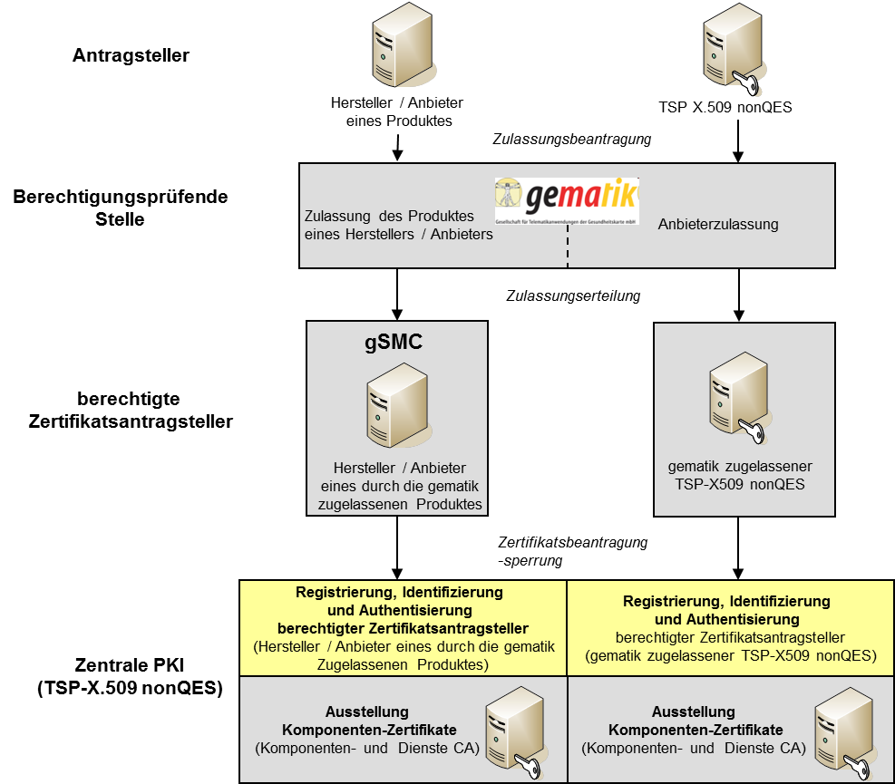
Abbildung 14: Abb_PKI_515 Zuständigkeiten der Rollen bei der Beantragung von Komponenten- und Signerzertifikaten
Die Abbildung Abb_PKI_520 stellt die Zuständigkeiten der Rollen bei der Antragsstellung der nonQES-HBA- und Organisationszertifikate dar.
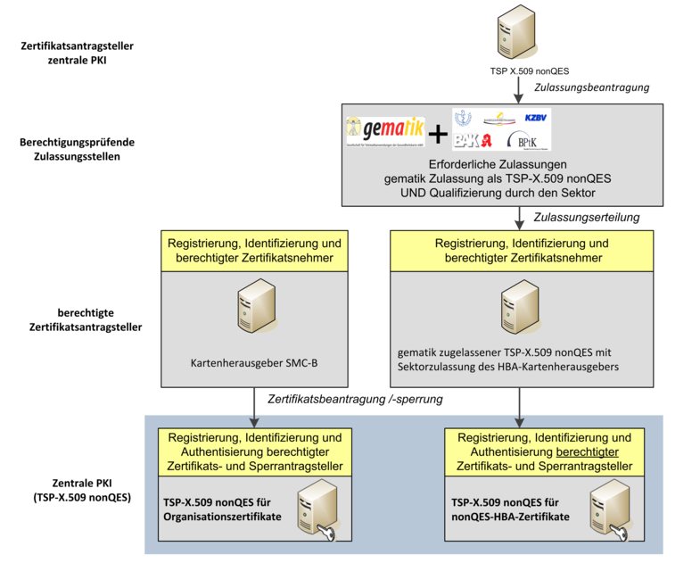
Abbildung 15: Abb_PKI_520 Zuständigkeiten der Rollen bei nonQES-HBA- und Organisationszertifikatsantragstellung
Bei der technischen Schnittstelle zur Ausstellung von Komponenten-, Signer-, nonQES-HBA- und Organisationszertifikaten sind die Schnittstellen
zu unterscheiden.
Die gematik muss Hersteller, Anbieter, TSP-X.509 nonQES und Kartenherausgeber zulassen und diesen die Berechtigung erteilen für deren zugelassene Produkte Komponenten-, Signer-, nonQES-HBA- und Organisationszertifikate bei dem beauftragten Anbieter der zentralen PKI zu beantragen.
Die gematik übermittelt dem Anbieter der zentralen PKI alle notwendigen Berechtigungsinformationen der Hersteller und Anbieter von zugelassenen Produkten, TSP-X.509 nonQES, und Kartenherausgeber, die berechtigt sind Zertifikate bei dem Anbieter der zentralen PKI zu beantragen oder zu sperren.
TIP1-A_3597
Der Anbieter der zentralen PKI (TSP-X.509 nonQES) MUSS bei Eingang einer neuen Berechtigungsinformation zugelassener Hersteller, Anbieter und TSP-X.509 nonQES (Berechtigungsinformation) den Empfang an die gematik authentisch und integer bestätigen und die folgenden Überprüfungen durchführen: 1) Stammen die Berechtigungsinformationen von der gematik? 2) Ist die Berechtigungsinformation von einer berechtigten Stelle bzw. einem berechtigtem Mitarbeiter der gematik ausgestellt?
<=TIP1-A_4464
Der Anbieter der zentralen PKI (TSP-X.509 nonQES) MUSS bei Eingang einer neuen Berechtigungsinformation zugelassener TSP-X.509 nonQES oder Kartenherausgeber (Berechtigungsinformation) den Empfang an die gematik authentisch und integer bestätigen und die folgenden Überprüfungen durchführen: 1) Stammen die Berechtigungsinformationen von der gematik? 2) Ist die Berechtigungsinformation von einer berechtigten Stelle bzw. Mitarbeiter der gematik ausgestellt? 3) Hat der TSP-X.509 nonQES oder Kartenherausgeber die Berechtigung (Qualifizierung) zur Ausgabe einer HBA bzw. SMC-B durch den jeweiligen Kartenherausgeber.
<=TIP1-A_3598
Der Anbieter der zentralen PKI (TSP-X.509 nonQES) MUSS nach positiver Überprüfung der Berechtigungsliste für Komponenten-, Signer-, nonQES-HBA- und Organisationszertifikate die neue Berechtigungsinformation ab dem angegebenen Gültigkeitszeitraum verbindlich verwenden.
<=TIP1-A_3599
Der Anbieter der zentralen PKI (TSP-X.509 nonQES) MUSS eine Schnittstelle zur Verfügung stellen, die Antragsberechtigten von Komponenten-, Signer-, nonQES-HBA- und Organisationszertifikate die Registrierung durch den Anbieter der zentralen PKI (TSP-X.509 nonQES) ermöglicht.
<=TIP1-A_3889
Der Anbieter der zentralen PKI (TSP-X.509 nonQES) MUSS die Ausgestaltung des Antrags und des Prozesses für die Registrierung Antragsberechtigter von Komponenten- und Signer-, nonQES-HBA- und Organisationszertifikate festlegen.
<=TIP1-A_3601
Der Anbieter der zentralen PKI (TSP-X.509 nonQES) MUSS die genauen Regelungen für das Registrierungsverfahren sowie Prüfregeln für die Berechtigung zur Antragsstellung von Komponenten- und Signerzertifikaten in seiner CP (bzw. CPS) definieren.
<=TIP1-A_3603
Der Anbieter der zentralen PKI (TSP-X.509 nonQES) MUSS bei der Registrierung von Antragsberechtigten für Komponenten- und Signerzertifikaten prüfen, ob a) der Antragsteller berechtigt ist, Komponenten- oder Signerzertifikate zu beziehen und b) eine Freigabe der gematik zum Abruf produktiver Zertifikate für diesen Antragsteller vorliegt.
<=Hinweis: Die Möglichkeit zum Abruf produktiver Zertifikate kann auch vor formaler Erteilung der Zulassung des Produkts durch die gematik erfolgen. Der Bedarf hierzu ist durch den Hersteller unter Nennung von Gründen anzuzeigen und wird unter folgenden Rahmenbedingungen erteilt:
TIP1-A_4465
Der Anbieter der zentralen PKI (TSP-X.509 nonQES) MUSS bei der Registrierung von Antragsberechtigten für nonQES-HBA- und Organisationszertifikate prüfen, ob a) der Antragsteller berechtigt ist, nonQES-HBA- bzw. Organisationszertifikate zu beziehen, b) eine Zulassung durch die gematik erfolgt ist und c) eine Qualifizierung durch den Sektor vorliegt.
<=TIP1-A_3605
Der Anbieter der zentralen PKI (TSP-X.509 nonQES) MUSS einen Registrierungsdienst für Komponenten- und Signer-, nonQES-HBA- und Organisationszertifikate zur Verfügung stellen, der aus dem Zertifikatsantragsdienst und der Zertifikatsausgabe besteht.
<=TIP1-A_3606
Der Registrierungsdienst des Anbieters der zentralen PKI (TSP-X.509 nonQES) MUSS eine vollständig automatisierte Authentisierung, Berechtigungsprüfung, Anlieferung und Bearbeitung der Requests sowie Ausgabe der erstellten Komponenten, Signer-, nonQES-HBA- und Organisationszertifikate ermöglichen.
<=TIP1-A_3607
Der Registrierungsdienst des Anbieters der zentralen PKI (TSP-X.509 nonQES) MUSS prüfen, ob in dem eingereichten Zertifikatsantrag alle obligatorisch geforderten Inhalte für die Erstellung eines Komponenten-, Signer-, nonQES-HBA oder Organisationszertifikats enthalten sind.
<=TIP1-A_3608
Der Registrierungsdienst des Anbieters der zentralen PKI (TSP-X.509 nonQES) MUSS bei Eingang eines Zertifikatsantrags folgende Überprüfungen durchführen: a) Ist der Hersteller oder Anbieter von der gematik berechtigt Zertifikatsanträge für Komponentenzertifikate zu stellen? b) Ist der Hersteller oder Anbieter durch den TSP-X.509 nonQES registriert? c) Ist das Produkt für den der Zertifikatsantrag des zugelassenen Herstellers oder Anbieters bei dem TSP-X.509 nonQES eingereicht wurde, von der gematik zugelassen? d) Ist die angegebene Seriennummer so gewählt, dass der SubjectDN des zu erstellenden Komponentenzertifikats eindeutig ist? e) Sind alle Inhalte für die Erstellung eines Komponentenzertifikats enthalten?
<=TIP1-A_3609
Der Registrierungsdienst des Anbieters der zentralen PKI (TSP-X.509 nonQES) MUSS bei den Überprüfungen eines Zertifikatsantrags sicherstellen, dass die Angaben des Antragsberechtigten für Komponenten-, Signer-, nonQES-HBA- und Organisationszertifikate in dem Zertifikatsantrag genau mit den entsprechenden Angaben der Berechtigungsinformationen der gematik zu den Herstellern, Anbietern, TSP-X.509 nonQES oder Kartenherausgebern und den zugelassenen Produkten übereinstimmen.
<=TIP1-A_3611
Der Anbieter der zentralen PKI (TSP-X.509 nonQES) MUSS sicherstellen, dass ein Komponenten-, Signer-, nonQES-HBA- oder Organisationszertifikat einem Hersteller oder Anbieter, einem TSP-X.509 nonQES oder Kartenherausgeber eindeutig zugeordnet werden kann.
<=TIP1-A_4240
Der Anbieter der zentralen PKI (TSP-X.509 nonQES) MUSS für Komponenten- und Signerzertifikate die dem Typ und Verwendungszweck entsprechende technische Rolle gemäß gemSpec_OID#Tab_PKI_406 den Zertifikatserstellungsdaten hinzufügen und in die Admission-Extension des Zertifikats einbringen. Ist für einen Zertifikatstyp keine technische Rolle definiert, bleibt die Admission-Extension leer.
<=Die Object Identifier sind im Dokument [gemSpec_OID] angegeben.
Für nonQES-HBA- und Organisationszertifikate der LEO sind professionItem und –OID gemäß [gemSpec_OID#Tab_PKI_402] bzw. [gemSpec_OID#Tab_PKI_403] zu den Zertifikatserstellungsdaten hinzuzufügen (vgl. [TIP1-A_3571] bzw. [TIP1-A_3573]).
TIP1-A_3612
Der Anbieter der zentralen PKI (TSP-X.509 nonQES) DARF ein Komponenten-, Signer-, nonQES-HBA- oder Organisationszertifikat NICHT ausstellen, wenn mindestens eine der Überprüfungen des Antragsteller oder der Zertifikatsantragsdaten negativ war.
<=TIP1-A_3613
Der Anbieter der zentralen PKI (TSP-X.509 nonQES) MUSS auf Aufforderung der gematik unmittelbar die Berechtigung eines Herstellers, Anbieters, TSP-X.509 nonQES oder Kartenherausgebers zur Antragstellung von Komponenten- Signer-, nonQES-HBA- oder Organisationszertifikaten widerrufen.
<=TIP1-A_3614
Der Anbieter der zentralen PKI (TSP-X.509 nonQES) MUSS das Verfahren zum Widerruf der Berechtigung der Zertifikatsantragstellung für Komponenten-, Signer- nonQES-HBA- und Organisationszertifikat eines Antragsberechtigten mit der gematik abstimmen.
<=TIP1-A_3615
Der Anbieter der zentralen PKI (TSP-X.509 nonQES) DARF Komponenten-,
Signer-, nonQES-HBA- oder Organisationszertifikate für einen widerrufenen Hersteller, Anbieter, TSP-X.509 nonQES oder Kartenherausgeber NICHT mehr erzeugen.
Auswirkungen auf die Gültigkeit bereits ausgestellter X.509-Zertifikate hat der Vorgang nicht.
TIP1-A_3616
Der Registrierungsdienst des Anbieters der zentralen PKI (TSP-X.509 nonQES) MUSS nach erfolgreicher Authentifizierung und Prüfung des Zertifikatsantrags die Daten zur Zertifikatserstellung von Komponenten-, Signer-, nonQES-HBA- und Organisationszertifikate an den Erstellungsdienst weiterleiten.
<=TIP1-A_3890
Der Anbieter der zentralen PKI (TSP-X.509 nonQES) MUSS sicherstellen, dass ab dem Zeitpunkt der Feststellung eines nicht-sicherheitskritischen Incidents, bis zur Klärung des Sachverhaltes über das weitere Vorgehen im Rahmen des Incident Managements, keine Zertifikatsanträge für Komponenten-, Signer-, nonQES-HBA- oder Organisationszertifikate der betroffenen CA entgegengenommen oder an den Erstellungsdienst des TSP-X.509 nonQES weitergeleitet werden.
<=Voraussetzung für den Bezug von X.509-Zertifikaten über die zentrale PKI der TI ist die erfolgreiche Zulassung/Qualifizierung des Herstellers (Komponentenzertifikate) oder TSP-X.509 nonQES (Signerzertifikate, HBA- und SMC-B Zertifikate) durch
Nachfolgend werden kurz Zulassungsablauf sowie spezifische Anforderungen an den Anbieter der zentralen PKI aufgezeigt. Eine grafische Übersicht dieser Zusammenhänge erfolgt in der Abb_PKI_516.
Zuständigkeiten und Ablauf für die Zulassung:
TIP1-A_3618
Der Anbieter der zentralen PKI (TSP-X.509 nonQES) MUSS sicherstellen, dass zur Bearbeitung einer Registrierung und eines Antrags auf die Ausstellung eines Komponenten-, Signer-, nonQES-HBA- oder Organisationszertifikat die folgenden Schritte durchgeführt werden:
Der Anbieter der zentralen PKI (TSP-X.509 nonQES) MUSS der gematik eine Schnittstelle zur Verfügung stellen, über die die gematik dem beauftragtem TSP-X.509 nonQES Berechtigungsinformationen authentisch, integritätsgeschützt und vertraulich übermitteln kann.
Der Anbieter der zentralen PKI (TSP-X.509 nonQES) MUSS die von der gematik übermittelten Berechtigungsinformationen auf Authentizität und Integrität prüfen und in dem eigenen Registrierungssystem übernehmen.
Der Registrierungsdienst des Anbieters der zentralen PKI (TSP-X.509 nonQES) MUSS nach erfolgreicher Prüfung aus (2) die Antragsberechtigten zur Zertifikatsantragstellung für zugelassene Produkte autorisieren und ihnen geeignete Authentifizierungsmittel vertraulich zustellen, mit deren Hilfe sie sich an der Schnittstelle I_Cert_Provisioning authentifizieren können.
Der Registrierungsdienst des Anbieters der zentralen PKI (TSP-X.509 nonQES) MUSS über einen vertraulichkeitsgeschützten Kanal der bereitgestellten Schnittstelle den Antragsteller sicher authentifizieren und den Request des Zertifikatsantragstellers entgegennehmen.
Der Registrierungsdienst des Anbieters der zentralen PKI (TSP-X.509 nonQES) MUSS im Rahmen der Prüfung des Zertifikatsantrags die eindeutige Identität und die Berechtigung des Antragsberechtigten anhand der gematik-Berechtigungsinformationen zum Erhalt des verlangten Zertifikatstyps sowie die Korrektheit und Vollständigkeit des eingereichten Zertifikats-Requests prüfen
Der Registrierungsdienst des Anbieters der zentralen PKI (TSP-X.509 nonQES) MUSS nach erfolgreicher Überprüfung den Zertifikatsantrag an den Erstellungsdienst des TSP-X.509 nonQES weiterleiten.
Der Erstellungsdienst des TSP-X.509 nonQES produziert das X.509-Zertifikat und liefert dies an den Registrierungsdienst zurück.
Der Registrierungsdienst des Anbieters der zentralen PKI (TSP-X.509 nonQES) MUSS das erzeugte X.509-Zertifikat an den Antragsberechtigten ausliefern.
In der Abbildung Abb_PKI_516 ist der Prozessablauf des Registrierungsdienstes für Komponenten-, Signer-, nonQES-HBA- und Organisationszertifikate und dessen Schnittstellen im Überblick dargestellt.
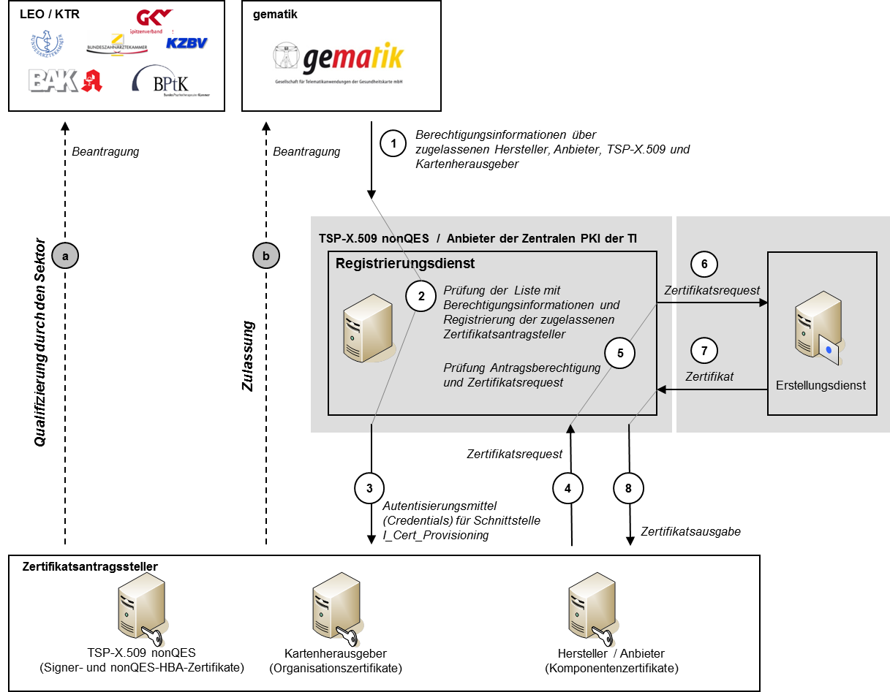
Abbildung 16: Abb_PKI_516 Prozessabläufe der zentralen PKI
Logische Operation I_Cert_Provisioning::provide_Certificate
Die Schnittstelle I_Cert_Provisioning enthält genau eine logische Operation provide_Certificate, die als Ausgabe ein Komponenten-, Signer-, nonQES-HBA- oder Organisationszertifikat liefert.
TIP1-A_4429
Der Anbieter der zentralen PKI (TSP-X.509 nonQES) MUSS für die Schnittstelle I_Cert_Provisioning die logische Operation provide_Certificate implementieren.
<=TIP1-A_4430
Der Anbieter der zentralen PKI (TSP-X.509 nonQES) MUSS die logische Operation I_Cert_Provisoning::provide_Certificate so implementieren, dass sie durch den SEND-REQUEST-Befehl angestoßen werden und alle zur Zertifikatsbeantragung und –erzeugung erforderlichen Daten enthält.
<=TIP1-A_4466
Der Anbieter der zentralen PKI (TSP-X.509 nonQES) MUSS die logische Operation I_Cert_Provisoning::provide_Certificate::AUTHENTICATE_REQUESTOR so implementieren, dass sie durch den AUTHENTICATE_REQUEST-Befehl angestoßen werden und den Zertifikatsantragssteller authentifiziert sowie die Berechtigung zur Zertifikatsantragsstellung und des angeforderten Zertifikatstyps überprüft.
<=TIP1-A_4431
Der Anbieter der zentralen PKI (TSP-X.509 nonQES) MUSS die logische Operation I_Cert_Provisoning::GET_CERTIFICATE so implementieren, dass sie durch den Befehl GET-CERTIFICATE angestoßen wird und zum zuvor übermittelten Zertifikats-Request das erstellte X.509-Komponenten-, Signer-, nonQES-HBA- oder Organisationszertifikat zurück erhält.
<=TIP1-A_3619
Der Anbieter der zentralen PKI (TSP-X.509 nonQES) MUSS alle Voraussetzungen schaffen, dass die durchzuführenden Schritte von der Berechtigungsprüfung bis zur Rückgabe des erzeugten X.509-Zertifikats an den Antragsteller vollautomatisiert ablaufen können.
<=Die Nutzung erfolgt, wenn die Schritte (1) bis (4) aus [TIP1-A_3618] erfolgreich abgeschlossen wurden.
TIP1-A_3620
Der Anbieter der zentralen PKI (TSP-X.509 nonQES) MUSS die technische Umsetzung der Schnittstelle zur Beantragung und Auslieferung der Komponenten-, Signer-, nonQES-HBA- oder Organisationszertifikate so realisieren, dass eine beidseitige Authentisierung (Zertifikatsantragsteller und TSP-X.509 nonQES) realisiert wird sowie die Daten verschlüsselt übertragen werden.
<=Die Durchführung kann auf unterschiedliche Weisen realisiert werden, wie z. B.
TIP1-A_5097
Der Anbieter der zentralen PKI (TSP-X.509 nonQES) MUSS für die Beantragung und Ausgabe von Komponenten-, Signer-, nonQES-HBA- oder Organisationszertifikate eine SOAP-Schnittstelle zur Verfügung stellen.
<=TIP1-A_5098
Der Anbieter der zentralen PKI (TSP-X.509 nonQES) MUSS für die Beantragung und Ausgabe von Komponenten-, Signer-, nonQES-HBA- oder Organisationszertifikate ein Web-Portal zur Verfügung stellen.
<=TIP1-A_3621
Der Anbieter der zentralen PKI (TSP-X.509 nonQES) für die Ausstellung von Komponenten-, Signer-, nonQES-HBA- oder Organisationszertifikate MUSS mindestens das Zertifikatsmanagementprotokoll CMP [RFC4210] unterstützen.
<=Der Anbieter der zentralen PKI (TSP-X.509 nonQES) stellt einen Erstellungsdienst für Komponenten-, Signer-, nonQES- und Organisationszertifikate bereit.
TIP1-A_3622
Der Anbieter der zentralen PKI (TSP-X.509 nonQES) MUSS sicherstellen, dass der öffentliche Schlüssel, dem die Attribute des Zertifikatsnehmers in einem Komponenten-, Signer-, nonQES-HBA- oder Organisationszertifikate zugeordnet werden, und der private Schlüssel des Zertifikatsnehmers zusammengehören.
<=TIP1-A_3623
Der Anbieter der zentralen PKI (TSP-X.509 nonQES) MUSS bei der Erstellung eines Komponentenzertifikats für den Produkttyp gSMC-KT prüfen, ob der Wert der ICCSN im commonName die Eindeutigkeit des SubjectDN herstellt.
<=TIP1-A_3624
Der Anbieter der zentralen PKI (TSP-X.509 nonQES) MUSS sicherstellen, dass für die Erstellung eines TLS-Zertifikats der Host- und Domänenname verwendet wird, der durch die gematik für diesen Anbieter und für den angegebenen Zweck autorisiert wurde.
<=Für die Erzeugung des Zertifikats sind die Festlegungen gemäß [gemSpec_PKI] hinsichtlich der Zertifikatsprofile sowie der Kodierung von Identitäten zu berücksichtigen.
TIP1-A_3626
Der Erstellungsdienst des Anbieters der zentralen PKI (TSP-X.509 nonQES) MUSS mit Hilfe der entsprechenden X.509-CA die Komponenten-, Signer-, nonQES-HBA- oder Organisationszertifikate erstellen und diese an den zugehörigen Registrierungsdienst des TSP-X.509 nonQES zurückliefern.
<=TIP1-A_3891
Der Erstellungsdienst des Anbieters der zentralen PKI (TSP-X.509 nonQES) MUSS sicherstellen, dass ab dem Zeitpunkt der Feststellung eines nicht-sicherheitskritischen Incidents, bis zur Klärung des Sachverhaltes über das weitere Vorgehen im Rahmen des Incident Managements, keine Zertifikatsanträge für Komponenten-, Signer-, nonQES-HBA- oder Organisationszertifikate der betroffenen CA von dem zugehörigen Registrierungsdienst des TSP-X.509 nonQES entgegengenommen oder bereits entgegengenommene verarbeiten werden.
<=TIP1-A_3627-02
Der Anbieter der zentralen PKI (TSP-X.509 nonQES) MUSS die Statusinformation für Komponenten- und Signerzertifikate gemäß den in Tabelle Tab_PKI_512-01 definierten Bereitstellungszeitpunkten dem zugehörigen OCSP-Responder in der TI zur Verfügung stellen.
<=
Tabelle #: Tab_PKI_512-01 Bereitstellungszeitpunkte der Zertifikatsstatusinformation durch den Erstellungsdienst
| Zertifikatstyp |
Bereitstellungszeitpunkt der Zertifikatsstatusinformation |
|---|---|
| C.NK.VPN |
unmittelbar nach Erstellung |
| C.SAK.AUT |
unmittelbar nach Erstellung |
| C.AK.AUT |
unmittelbar nach Erstellung |
| C.SMKT.AUT |
Nie (Veröffentlichung nicht erforderlich) |
| C.FD.TLS-C |
unmittelbar nach Erstellung |
| C.FD.TLS-S |
unmittelbar nach Erstellung |
| C.FD.SIG |
unmittelbar nach Erstellung |
| C.FD.OSIG | unmittelbar nach Erstellung |
| C.FD.AUT |
unmittelbar nach Erstellung |
| C.FD.ENC |
unmittelbar nach Erstellung |
| C.CM.TLS-CS |
unmittelbar nach Erstellung |
| C.SGD-HSM.AUT |
Nie (Veröffentlichung nicht erforderlich) |
| C.ZD.TLS-C *) |
unmittelbar nach Erstellung |
| C.ZD.TLS-S |
unmittelbar nach Erstellung |
| C.VPNK.VPN |
unmittelbar nach Erstellung |
| C.VPNK.VPN-SIS |
unmittelbar nach Erstellung |
| C.GEM.OCSP |
unmittelbar nach Erstellung |
*) geplant
Die Bereitstellung von Statusinformation für nonQES-HBA- und Organisationszertifikaten erfolgt gemäß Tab_PKI_509.
TIP1-A_3629
Der Erstellungsdienst des Anbieters der zentralen PKI (TSP-X.509 nonQES) MUSS für die Erzeugung von Komponenten-, Signer-, nonQES-HBA- und Organisationszertifikaten die folgenden Schritte durchführen:
In der Abb_PKI_517 sind der Prozessablauf des Erstellungsdienstes und dessen Schnittstellen im Überblick dargestellt.
Abbildung 17: Abb_PKI_517 Prozessablauf Erstellungsdienst des Anbieters der zentralen PKI (TSP-X.509 nonQES) für Komponenten-, Signer-, nonQES-HBA- und Organisationszertifikate
Das Vorgehen ist bei TSP-X.509 nonQES und Test-TSP-X.509-TSP nonQES identisch. Mit dem Antrag muss jedoch angegeben werden, dass ein Test-X.509-Zertifikat erzeugt werden soll und TSP-X.509 nonQES müssen zur Erzeugung des X.509-Zertifikats eine Test-X.509-CA einsetzen.
TIP1-A_4242
Der Anbieter der zentralen PKI (TSP-X.509 nonQES) MUSS die zusammengestellten Daten für das Test-nonQES-X.509-Zertifikat mit dem zugehörigen privaten Schlüssel der Test-X.509-CA des signieren.
<=Die Sperrdienste von TSP-X.509 QES und TSP-X.509 nonQES nehmen Sperraufträge von sperrberechtigten Personen bzw. Stellen entgegen und leiten die Änderung des Zertifikatsstatus an den OCSP-Responder weiter.
Gemäß Tab_PKI_514 gelten die folgenden Berechtigungen für die Sperrantragstellung von nonQES-Personen- und Organisationszertifikate sowie die jeweils zulässigen Sperrgründe:
Tabelle 7: Tab_PKI_514 Berechtigte Sperrantragsteller für nonQES-Personen- und Organisationszertifikate
| Zertifikatstyp |
Berechtigte Sperrantragsteller |
zulässiger Sperrgrund |
|---|---|---|
| C.HP.AUT C.HP.ENC |
Leistungserbringer selbst |
zu jeder Zeit ohne Angabe von Gründen |
| herausgebende LEO |
bei Entzug oder Wegfall des Berufs-attributes in einem geregelten Verfahren gemäß Ausgabepolicy |
|
| C.HCI.AUT C.HCI.ENC C.HCI.OSIG |
Zertifikatsnehmende med. Institution, Gesellschaf-terorgansations- oder Kosten-trägergeschäftsstelle |
zu jeder Zeit ohne Angabe von Gründen |
| Herausgebende Organisation (LEO bei SMC-B für medizini- sche Institutionen, Vertretende Gesellschafteror-ganisation bei SMC-B für Ge- sellschafterorganisationen, Vertretende Kostenträger-Organisation für SMC-B für Kostenträger) |
festgestellter Wegfall der Voraus-setzungen für den Betrieb einer SMC-B gemäß deren Ausgabepo- licy |
|
| C.CH.AUT C.CH.ENC C.CH.AUTN C.CH.ENCV C.CH.AUT_ALT |
Kostenträger |
zu jeder Zeit ohne Angabe von Gründen |
Gemäß Tab_PKI_515 gelten folgenden Berechtigungen für die Sperrantragstellung von QES-Zertifikaten für Leistungserbringer sowie die jeweils zulässigen Sperrgründe:
Tabelle 8: Tab_PKI_515 Berechtigte Sperrantragsteller für QES-Zertifikat für Leistungserbringer
| Zertifikatstyp |
Berechtigte Sperrantragsteller |
zulässiger Sperrgrund |
|---|---|---|
| C.HP.QES |
Leistungserbringer selbst |
zu jeder Zeit ohne Angabe von Gründen |
| Berufsattributvergebene LEO |
bei Entzug oder Wegfall des Berufsattributes in einem geregelten Verfahren gemäß Ausgabepolicy |
|
| Alle gemäß [eIDAS] berechtigten Sperrantragsteller |
Sperrgrund gemäß [eIDAS] |
Gemäß Tab_PKI_516-01 gelten folgenden Berechtigungen für die Sperrantragstellung von Komponenten- und Signerzertifikaten sowie die jeweils zulässigen Sperrgründe:
Tabelle 9: Tab_PKI_516-01 Berechtigte Sperrantragsteller für Komponenten- und Signerzertifikate
| Zertifikatstyp |
Berechtigte Sperrantragsteller |
zulässiger Sperrgrund |
|---|---|---|
| C.NK.VPN C.SAK.AUT C.AK.AUT C.SMKT.AUT C.FD. TLS-C C.FD. TLS-S C.FD.SIG C.FD.OSIG C.FD.AUT C.FD.ENC C.CM.TLS-CS C.SGD-HSM.AUT C.ZD.TLS-C *) C.ZD.TLS-S C.VPNK.VPN C.VPNK.VPN-SIS |
Zertifikatsnehmender Hersteller und Anbieter, |
zu jeder Zeit ohne Angabe von Gründen |
| gematik |
Wegfall der Voraussetzung für den Betrieb gemäß Ausgabepolicy |
|
| C.GEM.OCSP |
Zertifikatsnehmender TSP-X.509 nonQES |
zu jeder Zeit ohne Angabe von Gründen |
| gematik |
Wegfall der Voraussetzung für den Betrieb gemäß Ausgabepolicy |
|
| C.GEM.CRL |
Zertifikatsnehmender TSP-X.509 nonQES |
zu jeder Zeit ohne Angabe von Gründen |
| gematik |
Wegfall der Voraussetzung für den Betrieb gemäß Ausgabepolicy |
*) geplant
Bei der organisatorischen Schnittstelle P_Cert_Revocation zur Sperrung von X.509-Zertifikaten wird zwischen
unterschieden.
TIP1-A_3631
Der TSP-X.509 nonQES MUSS Sperranträge für Personen- und Organisationszertifikate des Antragsberechtigten entgegennehmen und prüfen, ob der Sperrantragsteller für Personen- und Organisationszertifikate gemäß Tab_PKI_514 sperrberechtigt ist
<=Für die Identifizierung und Autorisierung eines Sperrantragstellers gelten die Anforderungen gemäß [gemRL_TSL_SP_CP#4.2.3]
TIP1-A_3632
Der TSP-X.509 nonQES MUSS die Angaben des Sperrantrags prüfen, ob diese dem Anspruch auf zweifelsfreie Identifizierung des Sperrberechtigten für Personen- und Organisationszertifikate entsprechen.
<=TIP1-A_3633
Der TSP-X.509 nonQES MUSS nach erfolgreicher Identifizierung und Authentisierung des Sperrantragstellers das zu sperrende Personen- und Organisationszertifikat eindeutig identifizieren.
<=TIP1-A_3634
Der TSP-X.509 nonQES SOLL zur Identifizierung des zu sperrenden Personen- und Organisationszertifikates mindestens die Eingangsdaten gemäß Tabelle Tab_PKI_517 abfragen.
<=Tabelle 10: Tab_PKI_517 Eingangsdaten zur Sperrung von nonQES-Personen- und Organisationszertifikaten
| Daten |
Bezeichnung |
|---|---|
| Zertifikatsseriennummer |
Zertifikatsseriennummer des zu sperrenden X.509-Zertifikates |
| CA |
ausstellende X.509-CA |
| Name |
Name des Personen- oder Organisationszertifikatnehmers |
| Sperrgrund |
Grund, warum Zertifikat gesperrt werden soll |
TIP1-A_3635
Der TSP-X.509 nonQES MUSS die genauen Regelungen für den Sperrprozess für Personen- und Organisationszertifikate sowie Prüfregeln für die berechtigte Sperrantragsstellung in seiner Certificate Policy und in seinem Certification Practice Statement definieren.
<=TIP1-A_3637
Der TSP-X.509 nonQES MUSS die genauen Regelungen für den Suspendierungs- bzw. Desuspendierungsprozess für Versichertenzertifikate sowie Prüfregeln für die berechtigte Sperrantragsstellung in seiner Certificate Policy und in seinem Certification Practice Statement definieren.
<=TIP1-A_3638
Der TSP-X.509 nonQES MUSS nach eindeutiger Identifizierung des berechtigten Sperrantragstellers und des nonQES-Personen- und Organisationszertifikates die Sperrung von Zertifikaten der eGK und der alternativen Versichertenidentitäten sowie die Suspendierung bzw. Desuspendierung von eGK-Zertifikaten, unmittelbar ausführen.
<=
TIP1-A_3639
Der TSP-X.509 nonQES MUSS nach erfolgreicher Sperrung, Suspendierung bzw. Desuspendierung die Änderung des Zertifikatstatus der nonQES-Personen- und Organisationszertifikate dem OCSP-Responder in der TI und im Internet unmittelbar zur Verfügung stellen.
<=Für nonQES-Personen- und Organisationszertifikate gelten die Bereitstellungsinformationen gemäß Tabelle Tab_PKI_509.
TIP1-A_3640
Der Sperrdienst des TSP-X.509 nonQES MUSS dem berechtigten Sperrantragsteller für nonQES-Personen- und Organisationszertifikate eine Rückinformation zur erfolgreichen Sperrung zurückgeben.
<=TIP1-A_3641
Ein TSP-X.509 QES MUSS den Sperrdienst für QES-Zertifikate betreiben und Sperrungen gemäß den Vorgaben aus [eIDAS] durchführen.
<=TIP1-A_4243
Der TSP-X.509 QES MUSS Sperrantrag für QES-Zertifikate des Antragsberechtigten entgegennehmen und prüfen, ob der Sperrantragsteller gemäß Tab_PKI_515 sperrberechtigt ist.
<=TIP1-A_3642
TSP X.509 QES und TSP-X.509 nonQES MÜSSEN zur Umsetzung der Schnittstelle bzw. zur Durchführung des Sperrdienstes für Personen- und Organisationszertifikate die folgenden Schritte durchführen:
In der Abbildung Abb_PKI_518 sind der Prozessablauf des Sperrdienstes und dessen Schnittstellen im Überblick dargestellt.
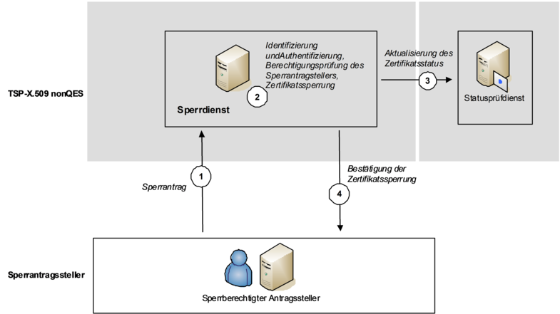
Abbildung 18: Abb_PKI_518 Prozessablauf Sperrdienst Personen- und Organisationszertifikate
Die Übermittlung und Überprüfung der Berechtigungsinformationen und Überprüfung der Angaben wird gemäß [TIP1-A_3597], [TIP1-A_4464] und [TIP1-A_3598] durchgeführt.
Die Registrierung der Sperrberechtigten erfolgt analog zur Registrierung von Zertifikatsantragstellern [TIP1-A_3599].
TIP1-A_3644
Der Anbieter der zentralen PKI (TSP-X.509 nonQES) MUSS die für die Registrierung gemachten Angaben des Sperrantragsteller von Komponenten- und Signerzertifikaten durch einen Abgleich mit den im Rahmen der Zulassung vorgenommenen Angaben überprüfen.
<=TIP1-A_3645-01
Der Anbieter der zentralen PKI (TSP-X.509 nonQES) MUSS anhand der bei der Registrierung gemachten Angaben entscheiden, ob der Sperrantragsteller für Komponenten- und Signerzertifikate gemäß Tab_PKI_516-01 sperrberechtigt ist.
<=
TIP1-A_4467
Der Anbieter der zentralen PKI (TSP-X.509 nonQES) MUSS anhand der bei der Registrierung gemachten Angaben entscheiden, ob der Sperrantragsteller für nonQES- und Organisationszertifikate gemäß Tab_PKI_514 sperrberechtigt ist.
<=Für die Identifizierung und Autorisierung eines Sperrantragstellers gelten die Anforderungen gemäß [gemRL_TSL_SP_CP #4.4]
TIP1-A_3648
Der Sperrdienst des Anbieters der zentralen PKI (TSP-X.509 nonQES) MUSS sicherstellen, dass im Sperrantrag für ein Komponenten-, Signer-, nonQES-HBA- und Organisationszertifikat alle Informationen zur eindeutigen Identifikation des zu sperrenden Zertifikates enthalten sind.
<=TIP1-A_3649
Der Anbieter der zentralen PKI (TSP-X.509 nonQES) MUSS bei Eingang eines Sperrantrags folgende Überprüfungen durchführen: a) Ist der Sperrantragsteller von der gematik berechtigt Sperranträge für Komponenten-, Signer-, nonQES-HBA- oder Organisationszertifikate zu stellen? b) Ist der Sperrantragsteller berechtigt einen Sperrantrag für das zu sperrende Komponenten-, Signer-, nonQES-HBA- oder Organisationszertifikat zu stellen? c) Konnte das zu sperrende Komponenten-, Signer-, nonQES-HBA- oder Organisationszertifikat eindeutig identifiziert werden?
<=TIP1-A_3650
Der Sperrdienst des Anbieters der zentralen PKI (TSP-X.509 nonQES) MUSS bei den Überprüfungen eines Sperrantrags sicherstellen, dass die Angaben Sperrberechtigten in dem Sperrantrag genau mit den entsprechenden Angaben der Berechtigungsinformationen für Komponenten, Signer-, nonQES-HBA- oder Organisationszertifikate der gematik übereinstimmen.
<=TIP1-A_3651
Der Anbieter der zentralen PKI (TSP-X.509 nonQES) SOLL zur Identifizierung des zu sperrenden Komponenten- oder Signerzertifikates mindestens die in Tabelle Tab_PKI_518 angegebenen Eingangsdaten zur Sperrung eines Komponentenzertifikates abfragen:
<=Tabelle 11: Tab_PKI_518 Eingangsdaten zur Sperrung von Komponenten- und Signerzertifikaten
| Daten |
Bezeichnung |
|---|---|
| Zertifikatsseriennummer |
Zertifikatsseriennummer des zu sperrenden X.509-Zertifikates |
| CA |
ausstellende X.509-CA |
| Name |
Name des Herstellers, Anbieters (Komponentenzertifikate) oder TSP-X.509 nonQES (Signerzertifikate) |
| Sperrgrund |
Grund, warum das X.509-Zertifikat gesperrt werden soll |
| FQDN |
FQDN des Dienstes gemäß Festlegung aus Dienstzulassung (nur für Zertifikate von Zentralen Diensten oder Fachanwendungsspezifischen Diensten) |
| ICCSN |
ICCSN des SMC-KT oder SMC-K (nur für Zertifikate der SMC-KT oder SMC-K) |
Zur Sperrung von nonQES-HBA- und Organisationszertifikaten gelten die Eingangsdaten aus Tab_PKI_517.
TIP1-A_3652
Der Anbieter der zentralen PKI (TSP-X.509 nonQES) MUSS die genauen Regelungen für den Sperrprozess für Komponenten, Signer-, nonQES-HBA- oder Organisationszertifikate sowie Prüfregeln für die berechtigte Sperrantragsstellung in seiner Certificate Policy und in seinem Certification Practice Statement definieren.
<=TIP1-A_3653
Der Anbieter der zentralen PKI (TSP-X.509 nonQES) MUSS sicherstellen, dass keine Sperranträge bearbeitet werden, die von einem nicht registrierten oder nicht zugelassenen Hersteller und Anbieter, TSP-X.509 nonQES oder Kartenherausgeber zu einem nicht zugelassenen Produkt gestellt wurden.
<=TIP1-A_3646
Der Anbieter der zentralen PKI (TSP-X.509 nonQES) MUSS eine vollständig automatisierte Anlieferung und Bearbeitung der Sperranträge von Komponenten, Signer-, nonQES-HBA- oder Organisationszertifikate ermöglichen.
<=TIP1-A_4244
Der Anbieter der zentralen PKI (TSP-X.509 nonQES) MUSS nach eindeutiger Identifizierung des berechtigten Sperrantragstellers und des Komponenten-, Signer-, nonQES-HBA- oder Organisationszertifikates die Sperrung ausführen.
<=TIP1-A_4246
Der Anbieter der zentralen PKI (TSP-X.509 nonQES) MUSS zur Bereitstellung der Sperrinformationen für VPN-Zugangsdienstzertifikate, neben der Bereitstellung über OCSP (vgl. gemSpec_PKI#GS-A_5074), eine CRL erzeugen.
<=
A_14621
Der Anbieter der zentralen PKI (TSP-X.509 nonQES) MUSS zur Bereitstellung der Sperrinformationen für VPN-Zugangsdienstzertifikate die Gültigkeitsdauer der über OCSP bereit gestellten OCSP-Responses auf 7 Tage festlegen (Differenz aus thisUpdate und nextUpdate in den OCSP-Responses). <=
A_14622
Der Anbieter der zentralen PKI (TSP-X.509 nonQES) KANN zur Bereitstellung der Sperrinformationen für VPN-Zugangsdienstzertifikate die Antworten für alle von der VPNK-CA bestätigten (ausgegebenen) Zertifikate vorproduzieren (alle vier Stunden bzw. auch direkt nach Sperrung) und auf Anfrage nur die vorproduzierten OCSP-Antworten liefern (Caching).
<=
Hinweis: Die Anzahl der durch eine VPNK-CA bestätigten Zertifikate ist im Vergleich zur restlichen Komponenten-PKI sehr niedrig. Auch ist die Gültigkeitsdauer einer OCSP-Response für ausgegebene Zertifikate einer VPNK-CA relativ lang (vgl. A_14621).
TIP1-A_4247
Der Anbieter der zentralen PKI (TSP-X.509 nonQES) MUSS die Sperrinformation für VPN-Zugangsdienstzertifikate nach erfolgreicher Sperrung in die CRL aufnehmen und diese unmittelbar bereitstellen.
<=TIP1-A_4248
Der Anbieter der zentralen PKI (TSP-X.509 nonQES) MUSS sicherstellen, dass die CRL für VPN-Zugangsdienstzertifikate im Internet über das Protokoll HTTP zur Verfügung gestellt wird.
<=TIP1-A_4468
Der Anbieter der zentralen PKI (TSP-X.509 nonQES) MUSS sicherstellen, dass die CRL für VPN-Zugangsdienstzertifikate mindestens einmal täglich mit einer Gültigkeitsdauer von 7 Tagen aktualisiert und unmittelbar darauf im Internet zum Download bereitgestellt wird.
<=TIP1-A_3647
Der Anbieter der zentralen PKI (TSP-X.509 nonQES) MUSS dem berechtigen Sperrantragsteller eine Rückinformation zur erfolgreichen Sperrung von Komponenten- und Signer-, nonQES-HBA- und Zertifikaten geben.
<=TIP1-A_3654
Der Anbieter der zentralen PKI (TSP-X.509 nonQES) MUSS zur Umsetzung der Schnittstelle bzw. zur Durchführung des Sperrdienstes für Komponenten-, Signer-, nonQES-HBA- und Organisationszertifikaten die folgenden Schritte durchführen (vgl. Abb_PKI_519):
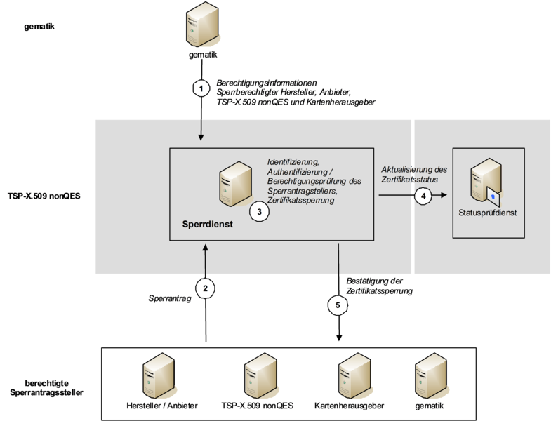
Abbildung 19: Abb_PKI_519 Prozessablauf Sperrdienst des TSP-X.509 nonQES
Schnittstelle Logische Operation I_Cert_Revocation::revoke_Certificate
Die Schnittstelle I_Cert_Revocate enthält genau eine logische Operation revoke_Certificate, welche die Durchführung der Sperrung eines Komponenten-, Signer-, nonQES-HBA- oder Organisationszertifikates initiiert.
TIP1-A_4432
Der Anbieter der zentralen PKI (TSP-X.509 nonQES) MUSS für die Schnittstelle I_Cert_Revocation die logische Operation revoke_Certificate implementieren
<=TIP1-A_4433
Der Anbieter der zentralen PKI (TSP-X.509 nonQES) MUSS die logische Operation I_Cert_Revocation::revoke_Certificate so implementieren, dass sie durch den SEND_REVOCATE_DATA-Befehl angestoßen wird und alle zur Zertifikatssperrung erforderlichen Daten gemäß Tab_PKI_518 enthält.
<=TIP1-A_5099
Der Anbieter der zentralen PKI (TSP-X.509 nonQES) MUSS die logische Operation I_Cert_Revocation::revoke_Certificate::AUTHENTICATE_REQUESTOR so implementieren, dass sie durch den SEND_REVOCATE_DATA-Befehl angestoßen wird und den Zertifikatsantragssteller authentisiert sowie die Berechtigung zur Zertifikatssperrung des zu sperrenden Zertifikatstyps überprüft.
<=TIP1-A_5100
Der Anbieter der zentralen PKI (TSP-X.509 nonQES) MUSS die logische Operation I_Cert_Revocation::revoke_Certificate:GET_CERTIFICATE_STATUS so implementieren, dass sie durch den Befehl SEND_REVOCATE_DATA angestoßen wird und zur zuvor übermittelten Zertifikatssperrung den Zertifikatsstatus des X.509-Komponenten-, Signer-, nonQES-HBA- oder Organisationszertifikats zurück erhält.
<=TIP1-A_4469
Der Anbieter der zentralen PKI (TSP-X.509 nonQES) MUSS die technische Umsetzung der Schnittstelle zur Sperrung der Komponenten-, Signer-, nonQES-HBA- oder Organisationszertifikate so realisieren, dass eine beidseitige Authentisierung (Zertifikatsantragsteller und TSP-X.509 nonQES) realisiert wird sowie die Daten verschlüsselt übertragen werden.
<=Die Durchführung kann auf unterschiedliche Weisen realisiert werden, wie z. B.
TIP1-A_5101
Der Anbieter der zentralen PKI (TSP-X.509 nonQES) MUSS für die Sperrantragstellung von Komponenten-, Signer-, nonQES-HBA- und Organisationszertifikate eine Web-Schnittstelle mit SOAP-Protokoll zur Verfügung stellen.
<=
TIP1-A_5102
Der Anbieter der zentralen PKI (TSP-X.509 nonQES) MUSS für die Sperrantragstellung von Komponenten-, Signer-, nonQES-HBA- und Organisationszertifikate ein Web-Portal zur Verfügung stellen.
<=TIP1-A_4470
Der Anbieter der zentralen PKI (TSP-X.509 nonQES) für die Sperrung von Komponenten-, Signer-, nonQES-HBA- oder Organisationszertifikate MUSS mindestens das Zertifikatsmanagementprotokoll CMP [RFC4210] unterstützen.
<=Die gematik hat die Verantwortung für den Betrieb einer gematik-Root-CA für die Ausgabe von X.509-Sub-CA-Zertifikaten und beauftragt einen Anbieter mit der Wahrnehmung und operativen Durchführung der Aufgaben.
Die gematik-Root-CA generiert die X.509-Sub-CA-Zertifikate für zugelassenen TSP-X.509 nonQES und den Anbieter TSL-Dienst. Entscheidungsgrundlage hierfür sind entsprechende Zulassungsinformationen der gematik.
Gemäß Tab_PKI_519 gelten folgende Zuständigkeiten für die berechtigte Zertifikatsantragstellung von X.509-Sub-CA-Zertifikaten:
Tabelle 12: Tab_PKI_519 Berechtigte Zertifikatsantragsteller für X.509-Sub-CA-Zertifikate
| Zertifikatstyp |
Berechtigte Zertifikatsantragsteller |
Berechtigungsprüfende Stelle |
Zertifikatsnehmer |
|---|---|---|---|
| C.GEM.<usage>-CA<n> |
zugelassene TSP-X.509 nonQES |
gematik |
zugelassene TSP-X.509 nonQES |
| C.GEM.TSL-CA |
Anbieter TSL-Dienst |
gematik |
Beauftragter Anbieter TSL-Dienst |
Gemäß Tabelle Tab_PKI_520 gelten folgende Zuständigkeiten für die berechtigte Sperrantragstellung von X.509-Sub-CA-Zertifikaten:
Tabelle 13: Tab_PKI_520 Berechtigte Sperrantragsteller für X.509-Sub-CA-Zertifikate
| Zertifikatstyp |
Berechtigte Zertifikatsantragsteller |
|---|---|
| C.GEM.<usage>-CA<n> |
Zertifikatsnehmender TSP-X.509 nonQES und gematik |
| C.GEM.TSL-CA |
Anbieter TSL-Dienst und gematik |
Die Ausstellung von X.509-Sub-CA-Zertifikaten für berechtigte TSP-X.509 nonQES erfolgt über die Schnittstellen P_Sub_CA_Certification_X.509 (vgl. [gemKPT_Arch_TIP#5.7.5]).
TIP1-A_3655
Der Anbieter der gematik-Root-CA MUSS in seiner CP (bzw. CPS) festlegen, a) welche Stellen für die Zertifikatsbeantragung und -sperrung von X.509-Sub-CA-Zertifikaten berechtigt sind, b) wie die Registrierung zur eindeutigen Identifikation und Authentisierung der berechtigten Zertifikatsantragsteller durchzuführen ist und c) die vollständige Beschreibung der Regularien, wie die Zertifizierung von Sub-CA-Schlüsseln durch die gematik-Root-CA erfolgt.
<=
Gemäß [gemRL_TSL_SP_CP#GS-A_4188] sind die konkreten Prüfregeln für die Berechtigung zur Antragsstellung vom gematik-Root-CA in seinem CP (bzw. CPS) zu definieren.
TIP1-A_4250
Der Anbieter der gematik-Root-CA MUSS ein Betriebskonzept auf Basis des Sicherheitskonzeptes erstellen, welches mindestens a) Root-Schlüsselerzeugung, b) Root-Zertifizierungszeremonie (self-signed) und c) die Ausstellungs- und Sperrprozesse der Sub-CA-Zertifikate beinhaltet.
<=TIP1-A_4434
Der Anbieter der gematik-Root-CA MUSS ein Verfahren zur Zeitsynchronisierung einsetzen, das eine maximale Abweichung von einer Sekunde gegenüber der gesetzlichen Zeit der PTB gewährleistet.
<=TIP1-A_4251
Der Anbieter der gematik-Root-CA MUSS die Sicherheit des Betriebes und der Root-Schlüsselerzeugung in einem Auditierverfahren durch die gematik nachweisen.
<=Das Audit der gematik-Root-CA kann auch durch einen von der gematik beauftragten Auditor erfolgen.
TIP1-A_3656
Der Anbieter der gematik-Root-CA MUSS das Antrags- und Sperrverfahren mit der gematik abstimmen und bereitstellen.
<=TIP1-A_3657
Der Anbieter der gematik-Root-CA MUSS sicherstellen, dass X.509-Sub-CA-Zertifikate nur generiert werden, wenn a) die Identifizierung und Authentifizierung des Zertifikatsantragstellers bzw. legitimierte Kontaktperson sowie b) der Zertifikatsantrag vollständig war und erfolgreich geprüft werden konnte, c) die gematik die Berechtigung der Antragsstellung bestätigt, d) alle für die Erstellung des beauftragten X.509-Zertifikats obligatorischen Antragsdaten übermittelt werden.
<=TIP1-A_3658
Der Anbieter der gematik-Root-CA MUSS sicherstellen, dass mindestens die in Tab_PKI_521 enthaltenen Angaben bei dem Zertifikatsantrag vorliegen.
<=Tabelle 14: Tab_PKI_521 Antragsdaten X.509-Sub-CA-Zertifikat
| Daten |
Beschreibung |
|---|---|
| TSP-X.509-CA |
Name und Anschrift der TSP-X.509-CA, |
| CA-Name |
CA-Name im Zertifikat gemäß [GS-A_4737], |
| Zertifikatstyp |
Typ des gewünschten Zertifikats CA eines produktiven TSP-X.509 nonQES CA eines Test-TSP-X.509 nonQES TSL-Signer |
| Antragsteller |
Name und Vorname einer Kontaktperson |
| Zertifikatsrequest |
Zertifikatsantrag |
| Unterschriften |
Unterschriften zweier bei der Zulassung bzw. einer Änderungsmitteilung genannten berechtigten Mitarbeiter des TSP-X.509 |
TIP1-A_4015
Die gematik Root-CA SOLL die Gültigkeitsdauer des TSL-Signer-CA-Zertifikats auf 8 Jahre ansetzen.
<=Bei der PKI für X.509-Sub-CA-Zertifikate wird zwischen einer gematik Produktiv-Root-CA und einer gematik Test-Root-CA unterschieden.
Der Betreiber der gematik-Root-CA stellt sowohl eine produktive gematik-Root-CA als auch eine gematik Test-Root-CA zur Verfügung.
TIP1-A_3662
Der Anbieter der gematik-Root-CA MUSS ein mit der gematik abgestimmtes Antragsverfahren für Test-TSP-X.509-CA-Zertifikate abstimmen und bereitstellen.
<=Für die Registrierung einer Test-TSP-X.509-CA ist ein verkürztes Verfahren vorgesehen.
TIP1-A_3663
Der Anbieter gematik-Root-CA MUSS sicherstellen, dass alle eingereichten Sperranträge von TSP-X.509 nonQES-CA-Zertifikate dokumentiert werden.
<=TIP1-A_3664
Der Anbieter der gematik-Root-CA MUSS zu jeder Sperrung mindestens die folgenden Sperrinformationen dokumentieren: a) Sperrantragsteller, b) zu sperrende TSP-X.509 nonQES, c) zu sperrendes Zertifikat c) Sperrgrund, d) Zeitpunkt der Sperrannahme
<=Eingereichte Sperrungen werden gemäß den definierten Incidents behandelt:
Der Anbieter der gematik-Root-CA stellt eine Schnittstelle zur Verfügung über die zugelassene TSP-X.509 nonQES Sub-CA-Zertifikatsanträge und Sperranträge stellen können.
TIP1-A_4252
Für die Beantragung von Sub-CA-Zertifikats MUSS der Anbieter der gematik-Root-CA ein Antragsverfahren für die Ausstellung- und Sperrung eines Sub-CA-Zertifikates zur Verfügung stellen.
<=TIP1-A_4253
Die zusammengestellten Daten für das Sub-CA-Zertifikat, das für einen Einsatz in der Produktivumgebung vorgesehen ist, MÜSSEN durch die produktive gematik-Root-CA mit dem zugehörigen privaten Schlüssel signiert werden.
<=TIP1-A_4254
Die zusammengestellten Daten für das Sub-CA-Zertifikat, das für einen Einsatz in der Testumgebung vorgesehen ist, MÜSSEN durch die gematik Test-Root-CA mit dem zugehörigen privaten Schlüssel signiert werden.
<=TIP1-A_4255
Die gematik-Root-CA MUSS das erzeugte Sub-CA-Zertifikat an eine vom TSP-X.509 nonQES autorisierte Person nach Erzeugung übergeben bzw. übermitteln.
<=Das erzeugte Sub-CA-Zertifikat wird dem TSP-X.509 nonQES zur Verfügung gestellt.
Die Vorgaben an die Zertifikatsprofile für gematik Root-CA und Sub-CA-Zertifikate sind in [gemSpec_PKI#5.10] festgelegt.
TIP1-A_5164
Der Anbieter der gematik Root-CA MUSS nach erfolgreicher Erstellung den Zertifikatsstatus für das erstellte X.509-Sub-CA-Zertifikat dem OCSP-Responder im Internet unverzüglich zur Verfügung stellen.
<=TIP1-A_5165
Der Anbieter der gematik Root-CA MUSS nach erfolgreicher Sperrung den Zertifikatsstatus für das gesperrte X.509-Sub-CA-Zertifikat dem OCSP-Responder im Internet unverzüglich zur Verfügung stellen.
<=TIP1-A_5166
Der Anbieter der gematik Root-CA MUSS den TSP-X.509 nonQES des gesperrten X.509-Sub-CA-Zertifikatsnehmer und die gematik über die durchgeführte Sperrung informieren.
<=TIP1-A_5167
Um die Zertifikatshierarchie über mehrere gematik Root-CA-Zertifikate zu bilden MUSS der Anbieter der gematik Root-CA zugehörige Crosszertifikate zu dem jeweiligen Vorgänger- und Nachfolger-gematik-Root-CA-Zertifikat erstellen.
<=Die Crosszertifizierung ist entsprechend dem Modell der Bundesnetzagentur zu erstellen. Beispiel:
TIP1-A_5168
Der Anbieter der gematik Root-CA MUSS die erstellten X.509-gematik-Root-CA- und Sub-CA-Zertifikate sowie die zugehörigen Zertifikatsfingerprints im Internet publizieren.
<=Die Schnittstelle des OCSP-Responder I_OCSP_Status_Information ist in [gemSpec_PKI#9] vollständig beschrieben.
Die Algorithmen und Parameter für die Erstellung der Signaturen über die Antworten des OCSP werden in [gemSpec_Krypt] festgelegt.
A_21765
Ein TSP-X.509 nonQES für Komponenten MUSS zur Erneuerung von Zertifikaten der gSMC-K (C.NK.VPN, C.AK.AUT und C.SAK.AUT) den Erneuerungsprozess auf Antrag der gematik einleiten und dabei alle gSMC-K Zertifikate erneuern, die vor dem 01.01.2020 ausgegeben wurden. Das Laufzeitende der erneuerten Zertifikate MUSS jeweils auf 31.12.2024 gesetzt werden. <=
A_21766
Ein TSP-X.509 nonQES für Komponenten DARF NICHT Zertifikate der gSMC-K erneuern, wenn das zu verlängernde C.NK.VPN-Zertifikat den Status "revoked" hat. Dazu wird vom TSP-X.509 nonQES für Komponenten zuvor eine Statusprüfung durchgeführt. <=
A_21763
Ein TSP-X.509 nonQES für Komponenten MUSS zur Erneuerung von Zertifikaten der gSMC-K (C.NK.VPN, C.AK.AUT und C.SAK.AUT) die ursprünglich eingereichten CSRs inklusive der ursprünglichen öffentlichen Schlüssel oder die alten Zertifikate verwenden.
<=
A_21767
Ein TSP-X.509 nonQES für Komponenten MUSS zur Erneuerung von Zertifikaten der gSMC-K (C.NK.VPN, C.AK.AUT und C.SAK.AUT) denselben commonName verwenden (mit ICCSN und Kartenherausgabedatum), der im ursprünglichen Zertifikat enthalten ist. Zudem MUSS das jeweils in gemSpec_PKI definierte Zertifikatsprofil für C.NK.VPN, C.AK.AUT und C.SAK.AUT verwendet werden. <=
A_21768
Ein TSP-X.509 nonQES für Komponenten MUSS zur Erneuerung von Zertifikaten immer alle einer gSMC-K zugeordneten Zertifikate, also C.NK.VPN, C.AK.AUT und C.SAK.AUT erneuern. <=
A_21769
Ein TSP-X.509 nonQES für Komponenten MUSS zur Erneuerung von Zertifikaten der gSMC-K die Zertifikate jeweils in einer Zertifikats-Datei des Formats PEM bereitstellen und das folgende Namensformat verwenden - die ICCSN wird dabei als Variable für die Zuordnung der jeweiligen gSMC-K mit angegeben:
A_21770
Ein TSP-X.509 nonQES für Komponenten MUSS alle erneuerten Zertifikate einer gSMC-K mit den entsprechenden in A_21769 und A_21775 definierten Dateien in einer gepackten Datei als ZIP zur Verfügung stellen. Jede ZIP-Datei enthält im Dateinamen die ICCSN der gSMC-K, exemplarisch mit <ICCSN>.zip
Alle ZIP-Dateien müssen nebeneinander an folgenden Downloadpunkten (getrennt nach Umgebung) bereitgestellt werden.
A_21771
Ein TSP-X.509 nonQES für Komponenten MUSS im Falle einer durch die berechtigten Sperrantragsteller initiierten zu erfolgenden Sperrung einer gSMC-K alle mit der ICCSN dieser gSMC-K verknüpften X.509-Zertifikate sperren. Dazu zählen im Falle einer zwischenzeitlichen Zertifikats-Erneuerung die erneuerten als auch die ursprünglich beantragten Zertifikate einer gSMC-K. <=
| Kürzel |
Erläuterung |
|---|---|
| AUT |
Authentisierung (Authentication) |
| AUTN |
Technisches Authentisierungszertifikat für Nachrichten |
| BSI |
Bundesamt für Sicherheit in der Informationstechnik |
| CA |
certification authority |
| CP |
Certificate Policy |
| CPS |
Certification Practice Statement |
| CRL |
Certificate Revocation List |
| DN |
Distinguished Name |
| EE |
End Entity |
| eGK |
Elektronische Gesundheitskarte |
| ENC |
Verschlüsselung (Encryption) |
| ENCV |
Technisches Verschlüsselungszertifikat für Verordnungen |
| FQDN |
Fully Qualified Domain Name |
| gSMC |
Gerätebezogene Security Module Card |
| HBA |
Heilberufsausweis |
| HCI |
Health Care Institution |
| HP |
Health Professional |
| HPC |
Health Professional Card |
| HSM |
Hardware Security Module |
| HTTP |
Hypertext Transfer Protocol |
| ICCSN |
ICC Serial Number |
| ID |
Identität (Identity) |
| IPSec |
Internet Protocol Security |
| KT |
Kartenterminal |
| KTR |
Kostenträger |
| LEO |
Leistungserbringer-Organisation |
| OCSP |
Online Certificate Status Protocol |
| OCSP-R |
OCSP-Responder |
| OID |
Object Identifier |
| OSIG |
Organizational Signature |
| PKI |
Public Key Infrastructure |
| PKIX |
PKI nach X.509 Standard der IETF |
| PrK |
Private Key |
| PuK |
Public Key |
| QES |
Qualifizierte elektronische Signatur |
| RCA |
Root-CA |
| RFC |
Request For Comment |
| SGB |
Sozialgesetzbuch |
| SHA |
Secure Hash Algorithm |
| SIG |
Elektronische Signatur |
| SM |
Security Module |
| SMC-B |
Sicherheitsmodul vom Typ B <Organisation> |
| SMC |
Security Module Card |
| gSMC-K |
Security Module Card Konnektor als <holder> |
| SM-K |
Sicherheitsmodul für Konnektoren |
| SM-KT |
Security Module Kartenterminal als <holder> |
| SM-KT-Zertifikat |
X.509-Komponentenzertifikat zu einem SM-KT |
| SubjectDN |
Subject Distinguished Name |
| TI |
Telematikinfrastruktur |
| TLS |
Transport Layer Security |
| TSL |
Trust-service Status List |
| TSP |
Trust Service Provider |
| VDA |
Vertrauensdiensteanbieter |
| VPN |
Virtual Private Network |
Das Glossar wird als eigenständiges Dokument (vgl. [gemGlossar]) zur Verfügung gestellt.
Die nachfolgende Tabelle enthält die Bezeichnung der in dem vorliegenden Dokument referenzierten Dokumente der gematik zur Telematikinfrastruktur. Der mit der vorliegenden Version korrelierende Entwicklungsstand dieser Konzepte und Spezifikationen wird pro Release in einer Dokumentenlandkarte definiert. Version und Stand der referenzierten Dokumente sind daher in der nachfolgenden Tabelle nicht aufgeführt. Deren zu diesem Dokument jeweils gültige Versionsnummer ist in der aktuellen, von der gematik veröffentlichten Dokumentenlandkarte enthalten, in der die vorliegende Version aufgeführt wird.
| [Quelle] |
Herausgeber: Titel |
|---|---|
| [gemGlossar] |
gematik: Glossar |
| [gemKPT_Arch_TIP] |
gematik: Konzept Architektur der TI-Plattform |
| [gemKPT_PKI_TIP] |
gematik: Konzept PKI der TI-Plattform |
| [gemRL_PruefSichEig] |
gematik: Richtlinie zur Prüfung der Sicherheitseignung |
| [gemRL_TSL_SP_CP] |
gematik: Certificate Policy Gemeinsame Zertifizierungsrichtlinie für Teilnehmer der gematik-TSL |
| [gemSpec_Krypt] |
gematik: Verwendung kryptographischer Algorithmen in der Telematikinfrastrukur |
| [gemSpec_OID] |
gematik: Spezifikation OID |
| [gemSpec_PKI] |
gematik: Spezifikation PKI |
| [GVO_IOPVZ] |
gematik: Geschäfts- und Verfahrensordnung für das Interoperabilitätsverzeichnis vesta: (Verzeichnis elektronischer Standards und Anwendungen im Gesundheitswesen) |
| [Quelle] |
Herausgeber (Erscheinungsdatum): Titel |
|---|---|
| [HPC-CP] | Bundesapothekerkammer, Bundesärztekammer, Bundespsychotherapeutenkammer, Bundeszahnärztekammer, Kassenzahnärztliche Bundesvereinigung Gemeinsame Policy für die Ausgabe der HPC, Zertifikatsrichtlinie HPC, Version: 1.0.5, 06.11.2012 |
| [RFC2119] | RFC 2119 (März 1997): Key words for use in RFCs to Indicate Requirement Levels S. Bradner, http://www.ietf.org/rfc/rfc2119.txt |
| [RFC4210] | RFC 4210 (September 2005): Internet X.509 Public Key Infrastructure, Certificate Management Protocol (CMP); C. Adams, S. Farrell, T. Kause, T. Mononen |
| [eIDAS] | Verordnung (EU) Nr. 910/2014 des europäischen Parlaments und des Rates vom 23. Juli 2014 über elektronische Identifizierung und Vertrauensdienste für elektronische Transaktionen im Binnenmarkt und zur Aufhebung der Richtlinie 1999/93/EG |